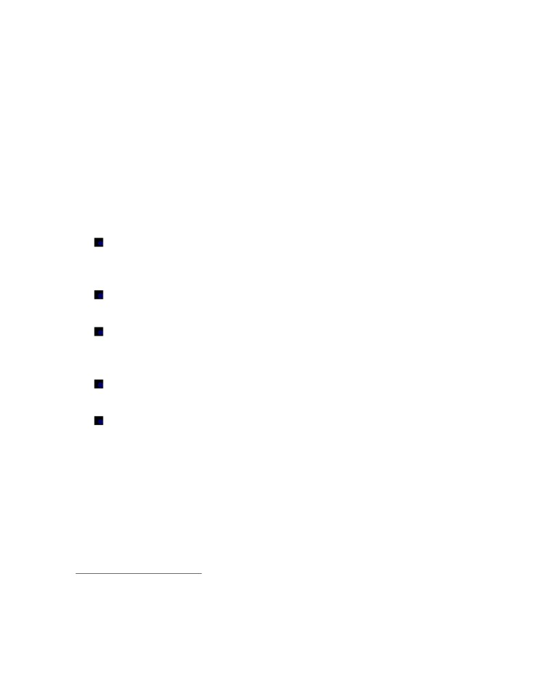

TS. Võ Trung Tín - Điện thoại: 0918223486. Email: trungtin22@gmail.com
TẬP BÀI GIẢNG
LUẬT MÔI TRƯỜNG
(Lưu hành nội bộ)
Trang 1
TS. Võ Trung Tín - Điện thoại: 0918223486. Email: trungtin22@gmail.com
1. Tên học phần: Luật M{i trường.
2. Số đơn vị tín chỉ: 03.
3. Mục tiêu môn học:
i. Trang bị cho sinh virn những kiến thức cơ bản về m{i trường, khoa học
môi trường, những quan điểm, học thuyết về m{i trường nói chung và
pháp luật về m{i trường nói rirng;
ii. Giúp sinh virn hiểu đúng những quy định của pháp luật về m{i trường
trrn cơ sở nắm bắt được mối quan hệ giữa pháp luật về m{i trường với
các lĩnh vực pháp luật khác, giữa luật quồc gia và luật quốc tế về m{i
trường;
iii. Giúp sinh virn hunh thành kĩ năng tum kiếm, đọc hiểu những văn bản quy
phạm pháp luật về m{i trường và những tài liệu có lirn quan; phkn tích,
đánh giá, bunh luận và vận dụng các quy định của pháp luật về m{i
trường.
4. Phương pháp giảng dạy:
a. Phương pháp Thuyết giảng (Lecturing method)
- Giảng virn sử dụng các phương tiện truyền đạt như bảng viết, đèn chiếu,
hệ thống km thanh, cử chỉ …để trunh bày nội dung bài giảng.
- Sinh virn tiếp thu bài giảng trrn cơ sở làm việc cá nhkn.
b. Phương pháp Tổ chức học tập theo nhóm (Group-based learning)
- Giảng virn tổ chức lớp học theo nhóm và chuẩn bị các nhiệm vụ học tập
cụ thể.
- Mỗi nhóm nhận một nhiệm vụ học tập và c ng hợp tác để thực hiện với
sản phẩm dự kiến đạt được trong một thời hạn cụ thể.
c. Phương pháp nghiên cứu tunh huống (Case study method)
- Thảo luận nhóm (Group Discussion):
+ Giảng virn giúp đỡ, dẫn dắt người học, làm nảy sinh tri thức ở người
học.
+ Giảng virn giới thiệu một số “case” cho lớp, sau đó đặt ra hệ thống cku
hỏi để hướng dẫn lớp thảo luận. Giảng virn chỉ nru ra các tunh huống,
học virn phải tự tum ra các phương pháp có thể giải quyết vấn đề và phải
tum ra một phương pháp tối ưu.
+ Trong quá trunh thảo luận, giảng virn đưa ra các gợi ý để giúp nội dung
Trang 2
TS. Võ Trung Tín - Điện thoại: 0918223486. Email: trungtin22@gmail.com
thảo luận lu{n s{i nổi và đi đúng hướng.
+ Giảng virn tổng kết thảo luận và giải đáp các cku hỏi.
- Tranh luận (Debate format)
Giảng virn chia lớp thành một số nhóm, mỗi nhóm chuẩn bị ý kiến về
một quan điểm hoặc giải pháp sau đó lần lượt mỗi nhóm trunh bày, nhóm
kia đưa ra ý kiến phản biện.
5.
Phương pháp đánh giá:
- Kiểm tra (trọng số 50%): bao gồm điểm bài thuyết trunh và bài kiểm tra
+ điểm bài tập (nhóm) + điểm thưởng (phát biểu, chuyrn cần).
- Điểm thi hết học phần (trọng số 50%): thi viết.
6.
Nӝi dung môn học:
- Bài 1: Khái niệm m{i trường và luật m{i trường
- Bài 2: Pháp luật về kiểm soát { nhiễm m{i trường
- Bài 3: Pháp luật về các nguồn tài nguyrn thirn nhirn
- Bài 4: Pháp luật Việt Nam về di sản văn hóa
- Bài 5: Pháp luật về xử lý vi phạm và giải quyết tranh chấp m{i trường
- Bài 6: Luật quốc tế về m{i trường
Trang 3
TS. Võ Trung Tín - Điện thoại: 0918223486. Email: trungtin22@gmail.com
BÀI 1
KHÈI NIỆM MÔI TRƯỜNG VÀ LUẬT MÔI TRƯỜNG
1.1. KHÈI NIỆM MÔI TRƯỜNG
Khái niệm m{i trường và tầm quan trọng của m{i trường
Theo nghĩa rộng: M{i trường (MT) bao gồm toàn bộ nói chung những điều kiện
tự nhirn và xã hội bao bọc xung quanh con người và sinh vật.
Theo Luật Bảo vệ m{i trường: MT là hệ thống các yếu tố vật chất tự nhirn và
nhkn tạo có tác động đối với sự tồn tại và phát triển của con người và sinh vật.
MT là không gian sống, là nơi cung cấp các nguồn tài nguyrn thirn nhirn, nơi
chứa đựng các chất phế thải từ các hoạt động của con người.
Thực trạng m{i trường hiện nay:
Tunh trạng suy kiệt nguồn tài nguyên thiên nhiên.
Ô nhiễm m{i trường và suy thoái m{i trường ngày càng trầm trọng.
Sự cố m{i trường ngày càng gia tăng.
1.2. CÈC BIỆN PHÈP BẢO VỆ MÔI TRƯỜNG VÀ SỰ CẦN THIẾT PHẢI BẢO VỆ
MÔI TRƯỜNG BẰNG PHÈP LUẬT
Biện pháp chính trị.
Biện pháp tuyên truyền - giáo dục.
Biện pháp kinh tế.
Biện pháp khoa học - công nghệ.
Biện pháp pháp lý.
Lưu y: Cần chưng minh biện phap phap ly la biện phap bảo đảm thưc hiện các biện phap bảo
vệ MT khac.
1.3. ĐỊNH NGHĨA LUẬT MÔI TRƯỜNG, ĐỐI TƯỢNG ĐIỀU CHỈNH VÀ PHƯƠNG
PHÈP ĐIỀU CHỈNH CỦA LUẬT MÔI TRƯỜNG
1.3.1. Định nghĩa luật m{i trường
Luật m{i trường (LMT) la một lĩnh vưc phap luật gồm tổng hợp cac quy phạm phap luật
điều chỉnh cac quan hệ xã hội phat sinh trưc tiếp trong họat động khai thac, quản ly va bảo vệ
cac yếu tố m{i trường.
Trang 4
TS. Võ Trung Tín - Điện thoại: 0918223486. Email: trungtin22@gmail.com
Lưu ê: Chúng ta không nói LMT là một ngành luật trong hệ thống pháp luật Việt Nam vì
do tính thống nhất của MT, nrn khi nói tới LMT là phải nói tới cả luật quốc gia và luật quốc tế
về MT.
1.3.2. Đối tượng điều chỉnh của luật m{i trường
Định nghĩa: Đối tượng điều chỉnh của LMT chính là các quan hệ xã hội phát sinh
trực tiếp trong họat động khai thác, quản lý và bảo vệ các yếu tố MT.
Muốn xác định phạm vi điều chỉnh của LMT cần phải lưu ý:
Thứ nhất cần phải xác định yếu tố MT theo LMT chỉ bao gồm những yếu tố vật
chất tự nhirn và nhkn tạo (khoản 1, khoản 2, Điều 3 Luật Bảo vệ m{i trường).
Thứ hai: cần phải xác định thế nào là những quan hệ xã hội phát sinh trực tiếp
trong việc khai thác, quản lý và bảo vệ các yếu tố MT.
Phân nhóm: Căn cứ vào chủ thể tham gia vào quan hệ pháp luật MT, có thể chia đối
tượng điều chỉnh của LMT ra làm 3 nhóm:
Nhóm quan hệ giữa các quốc gia và các chủ thể khác của Luật quốc tế về MT.
Nhóm quan hệ giữa các cơ quan nhà nước với nhau và giữa cơ quan nhà nước
với tổ chức, cá nhkn.
Nhóm quan hệ giữa tổ chức, cá nhkn với nhau.
1.3.3. Phương pháp điều chỉnh của luật m{i trường
Trrn cơ sở đối tượng đều chỉnh như đã nói ở trrn, LMT sử dụng hai phương pháp điều
chỉnh sau:
Phương pháp bunh đẳng - thỏa thuận (d ng để điều chỉnh nhóm quan hệ thứ nhất và
nhóm quan hệ thứ ba).
Phương pháp quyền uy (d ng để điều chỉnh nhóm quan hệ thứ hai).
1.4. CÁC NGUYÊN TẮC CƠ BẢN CỦA LUẬT MÔI TRƯỜNG
1.4.1. Nguyên tắc Nhà nước ghi nhận và bảo vệ quyền con người được sống trong một m{i
trường trong lành
Khai niệm về quyền được sống trong m{i trường trong lanh
Quyền được sống trong MT trong lành là quyền được sống trong một MT kh{ng bị {
nhiễm (theo tiru chuẩn, quy chuẩn kỹ thuật MT chứ kh{ng phải là MT trong sạch lý tưởng),
đảm bảo cuộc sống được hài hòa với tự nhirn (nguyrn tắc thứ nhất của Tuyrn bố Stockholm về
MT con người, Tuyrn bố Rio De Janeiro về MT và phát triển).
Cơ sở xac lập
Trang 5
TS. Võ Trung Tín - Điện thoại: 0918223486. Email: trungtin22@gmail.com
Tầm quan trọng của quyền được sống trong MT trong lành: Đky là quyền quyết
định đến vấn đề sức khỏe, tuổi thọ và chất lượng cuộc sống nói chung.
Thực trạng MT hiện nay đang bị suy thoái nrn quyền tự nhirn này đang bị xkm
phạm.
Xuất phát từ những cam kết quốc tế và xu hướng chung trrn thế giới.
Hệ quả phap ly.
Nhà nước phải có trách nhiệm thực hiện những biện pháp cần thiết để bảo vệ và
cải thiện chất lượng MT nhằm bảo đảm cho người dkn được sống trong một MT trong lành.
Xét ở khía cạnh này thu đky kh{ng chỉ là một nguyrn tắc mà còn là mục đích của LMT.
Tạo cơ sở pháp lý để người dkn bảo vệ quyền được sống trong MT trong lành
của munh th{ng qua những quyền và nghĩa vụ cơ bản của công dân (Điều 25, 43 và các Điều
trong Chương 2, Hiến pháp 2013) như: quyền khiếu nại, tố cáo, quyền tự do cư trú, quyền được
bồi thường thiệt hại, quyền tiếp cận th{ng tin…
1.4.2. Nguyên tắc phát triển bền vững
Khai niệm
Theo khoản 4, Điều 3, Luật BVMT, phát triển bền vững được định nghĩa là: “phat triển
đap ưng được nhu cầu của hiện tại ma kh{ng lam tổn hại đến khả năng đap ưng nhu cầu đó
của cac thế hệ tương lai trên cơ sở kết hợp chặt chẽ, hai hòa giữa tăng trưởng kinh tế, bảo đảm
tiến bộ xã hội va bảo vệ m{i trường”.
Nói cách khác, phát triển bền vững chính là phát triển trrn cơ sở duy tru được mục tiru
và cơ sở vật chất của quá trunh phát triển. Muốn vậy cần phải có sự tiếp cận mang tính tổng hợp
và bảo đảm sự kết hợp hài hòa giữa các mục tiru; kinh tế-xã hội-m{i trường.
Cơ sở xac lập
Nguyrn tắc này được xác lập trrn những cơ sở sau:
Tầm quan trong của MT và phát triển
Mối quan hệ tương tác giữa MT và phát triển.
Yêu cầu của nguyên tắc
Kết hợp hài hòa giữa tăng trưởng kinh tế, bảo đảm tiến bộ xã hội và BVMT (báo
cáo Brundland, nguyrn tắc 13 của tuyrn bố Stockholm, nguyrn tắc 5 của tuyrn bố Rio De
Janeiro).
Hoạt động trong sức chịu đựng của trái đất.
1.4.3. Nguyên tắc phòng ngừa
Trang 6
TS. Võ Trung Tín - Điện thoại: 0918223486. Email: trungtin22@gmail.com
Cơ sở xac lập
Chi phí phòng ngừa bao giờ cũng rẻ hơn chi phí khắc phục.
Có những tổn hại gky ra cho MT là kh{ng thể khắc phục được mà chỉ có thể
phòng ngừa.
Mục đích của nguyên tắc: ngăn ngừa những rủi ro mà con người và thirn nhirn có
thể gky ra cho MT.
Lưu ê: Những rủi ro mà nguyrn tắc này ngăn ngừa là những rủi ro đã được chứng
minh về khoa học và thực tiễn. Đky chính là cơ sở để phkn biệt giữa nguyrn tắc phòng ngừa và
nguyrn tắc thận trọng.
Yêu cầu của nguyên tắc
Lường trước những rủi ro mà con người và thirn nhirn có thể gky ra cho MT
Đưa ra những phương án, giải pháp để giảm thiểu rủi ro, loại trừ rủi ro.
1.4.4. Nguyên tắc người gky { nhiễm phải trả tiền
Cơ sở xac lập
Coi MT là một lọai hàng hóa đặc biệt.
Ưu điểm của c{ng cụ tài chính trong BVMT
Người phải trả tiền theo nguyrn tắc này là người gky { nhiễm hiểu theo nghĩa rộng bao
gồm: người khai thác, sử dụng tài nguyrn thirn nhirn; người có hành vi xả thải vào MT; người
có những hành vi khác gky tác động xấu tới MT theo quy định của pháp luật
Mục đích của nguyên tắc
Định hướng hành vi tác động của các chủ thể vào MT theo hướng khuyến khính
những hành vi tác động có lợi cho MT th{ng qua việc tác động vào chính lợi ích kinh tế của họ.
Bảo đảm sự c{ng bằng trong hưởng dụng và BVMT.
Tạo nguồn kinh phí cho họat động BVMT.
Yêu cầu của nguyên tắc
Tiền phải trả cho hành vi gky { nhiễm phải tương xứng với tính chất và mức độ
gky tác động xấu tới MT
Tiền phải trả cho hành vi gky { nhiễm phải đủ sức tác động đến lợi ích và hành
vi của các chủ thể có lirn quan.
Cac hunh thưc trả tiền theo nguyên tắc
Thuế tài nguyrn (Luật Thuế tài nguyên).
Trang 7
TS. Võ Trung Tín - Điện thoại: 0918223486. Email: trungtin22@gmail.com
Thuế M{i trường (Luật Thuế Bảo vệ m{i trường).
Phí bảo vệ m{i trường (Điều 148 Luật BVMT). Có nhiều hunh thức phí BVMT
như phí BVMT đối với nước thải, phí BVMT đối với khai thác khoáng sản…
Tiền phải trả cho việc sử dụng dịch vụ (dịch vụ thu gom rác, dịch vụ quản lý
chất thải nguy hại…).
Tiền phải trả cho việc sử dụng cơ sở hạ tầng (tiền thur kết cấu hạ tầng trong khu
c{ng nghiệp bao gồm cả tiền thur hệ thống xử lý chất thải tập trung…).
Chi phí phục hồi MT trong khai thác tài nguyên.
1.4.5. Nguyên tắc môi trường là một thể thống nhất
Sư thống nhất của MT
Được thể hiện ở 2 khía cạnh:
Sự thống nhất về kh{ng gian: MT kh{ng bị chia cắt bởi birn giới quốc gia, địa
giới hành chính.
Sự thống nhất nội tại giữa các yếu tố cấu thành MT: Giữa các yếu tố cấu thành
MT lu{n có quan hệ tương tác với nhau, yếu tố này thay đổi dẫn đến sự thay đổi của yếu tố
khác. Ví dụ: sự thay đổi của rừng trrn các lưu vực s{ng dẫn đến sự thay đổi về số lượng và chất
lượng của nước trong lưu vực.
Yêu cầu của nguyên tắc
Việc BVMT kh{ng bị chia cắt bởi birn giới quốc gia, địa giới hành chính.
Cần phải bảo đảm có mối quan hệ tương tác giữa các ngành, các văn bản quy
phạm pháp luật trong việc quản lý, điều chỉnh các hoạt động khai thác và BVMT ph hợp với
bản chất của đối tượng khai thác, bảo vệ.
1.5. NGUỒN CỦA LUẬT MÔI TRƯỜNG
Nguồn của LMT gồm các văn bản pháp luật có chứa đựng các quy phạm pháp luật MT,
cụ thể:
Các điều ước quốc tế về MT.
Các văn bản quy phạm pháp luật của Việt Nam về MT.
Các văn bản trên se được giới thiệu trong từng nội dung cụ thể ở các chương sau.
Trang 8
TS. Võ Trung Tín - Điện thoại: 0918223486. Email: trungtin22@gmail.com
BÀI 2: PHÈP LUẬT VỀ KIỂM SOÈT Ô NHIỄM MÔI TRƯỜNG
Văn bản pháp luật:
Luật Bảo vệ sưc khoẻ nhkn dkn 1989.
Luật Tiêu chuẩn va quy chuẩn kỹ thuật 2006.
Luật An toan thưc phẩm 2010.
Luật Bảo vệ m{i trường 2014.
Nghị định số 23-HĐBT ngay 24-01-1991 ban hanh Điều lệ vệ sinh.
Nghị định 18/2015/NĐ-CP ngay 14 thang 02 năm 2015 của Chính phủ quy định về quy
hoạch bảo vệ m{i trường, đanh gia m{i trường chiến lược, đanh gia tac động m{i
trường va kế hoạch bảo vệ m{i trường.
Nghị định 19/2015/NĐ-CP ngay 14 thang 02 năm 2015 của Chính phủ quy định chi tiết
thi hanh một số điều của Luật bảo vệ m{i trường
Nghị định 38/2015/NĐ-CP ngày 24 thang 4 năm 2015 của Chính phủ về quản ly chất
thải va phế liệu.
Nghị định 40/2019/NĐ-CP ngày 13 tháng 5 năm 2019 của Chính phủ sửa đổi, bổ sung
một số điều của cac Nghị định quy định chi tiết, hướng dẫn thi hanh Luật Bảo vệ môi
trường.
2.1. TỔNG QUAN VỀ KIỂM SOÈT Ô NHIỄM MÔI TRƯỜNG
Sinh viên tư nghiên cưu cac khai niệm { nhiễm m{i trường, sư cố m{i trường, suy thoai m{i
trường
2.2. TIÊU CHUẨN MÔI TRƯỜNG, QUY CHUẨN KỸ THUẬT MÔI TRƯỜNG
2.2.1. Khái niệm
Định nghĩa
Theo Luật BVMT: “Tiêu chuẩn m{i trường la mưc giới hạn của cac th{ng số về chất
lượng m{i trường xung quanh, ham lượng của cac chất gky { nhiễm có trong chất thải, cac yêu
cầu kỹ thuật va quản ly được cac cơ quan nha nước va cac tổ chưc c{ng bố dưới dạng văn bản
tư nguyện ap dụng để bảo vệ m{i trường”, “Quy chuẩn kỹ thuật m{i trường la mưc giới hạn
của cac th{ng số về chất lượng m{i trường xung quanh, ham lượng của cac chất gky { nhiễm
có trong chất thải, cac yêu cầu kỹ thuật va quản ly được cơ quan nha nước có thẩm quyền ban
hanh dưới dạng văn bản bắt buộc ap dụng để bảo vệ m{i trường” (Khoản 5, Khoản 6 Điều 3
Luật BVMT).
Trang 9
TS. Võ Trung Tín - Điện thoại: 0918223486. Email: trungtin22@gmail.com
Theo Luật Tiêu chuẩn và quy chuẩn kỹ thuật: “Tiêu chuẩn la quy định về đặc tính kỹ
thuật va yêu cầu quản ly d ng lam chuẩn để phkn loại, đanh gia sản phẩm, hang hoa, dịch vụ,
qua trunh, m{i trường va cac đối tượng khac trong hoạt động kinh tế - xã hội nhằm nkng cao
chất lượng va hiệu quả của cac đối tượng nay”, “quy chuẩn kỹ thuật la quy định về mưc giới
hạn của đặc tính kỹ thuật va yêu cầu quản ly ma sản phẩm, hang hoa, dịch vụ, qua trunh, m{i
trường va cac đối tượng khac trong hoạt động kinh tế - xã hội phải tukn thủ để bảo đảm an
toan, vệ sinh, sưc khỏe con người; bảo vệ động vật, thưc vật, m{i trường; bảo vệ lợi ích va an
ninh quốc gia, quyền lợi của người tiêu d ng va cac yêu cầu thiết yếu khac” (Khoản 1, khoản
2, Điều 3 của Luật Tiru chuẩn và Quy chuẩn kỹ thuật).
Có thể nhận thấy cả 2 thuật ngữ này đều thể hiện dưới dạng những chuẩn mực dưới
dạng định tính hoặc định lượng cụ thể. Trong lĩnh vực m{i trường thu các th{ng số mang tính
kỹ thuật càng được định lượng thu càng đánh giá chính xác mức độ { nhiễm.
Phkn loại
Có nhiều cách thức phkn loại khác nhau. Nếu căn cứ vào nội dung, mục đích và
đối tượng áp dụng, tiru chuẩn m{i trường và quy chuẩn m{i trường được chia thành:
Tiru chuẩn và quy chuẩn chất lượng m{i trường: là những tiru chuẩn, quy chuẩn
d ng để đánh giá m{i trường xung quanh, để xác định thế nào là m{i trường bị { nhiễm, và nếu
{ nhiễm thu ở mức độ như thế nào. Tiru chuẩn, quy chuẩn này quy định rất rõ những chất gu
kh{ng đựơc có, những chất gu có thể có nhưng phải có giới hạn,…trong m{i trường. Nói cách
khác, những tiru chuẩn, quy chuẩn dạng này se đề ra mức tối đa của các chất { nhiễm trong
m{i trường tiếp nhận d ng để đánh giá chất lượng m{i trường xung quanh. Đky là những tiru
chuẩn, quy chuẩn để xác định đku là một m{i trường sạch, kh{ng bị { nhiễm hay ngược lại.
Tiru chuẩn và quy chuẩn thải: là các tiru chuẩn, quy chuẩn được áp dụng trong
lĩnh vực kiểm soát xả thải vào m{i trường do hoạt động sản xuất, sinh hoạt của con người. Tiru
chuẩn, quy chuẩn thải có hai loại là tiru chuẩn, quy chuẩn đối với chất thải và tiru chuẩn, quy
chuẩn tổng thải.
+ Tiru chuẩn, quy chuẩn đối với chất thải: là những tiru chuẩn, quy chuẩn xác định
những điều kiện để chất thải đựơc phép thải vào m{i trường, cụ thể nó quy định những chất gky
{ nhiễm nào được phép có trong chất thải, nếu có thu định lượng là bao nhiru…
+ Tiru chuẩn, quy chuẩn về tổng thải: là tổng lượng chất thải được phép thải vào
khu vực cụ thể (một lưu vực s{ng, một hồ nước lớn…). Chúng ta chỉ được phép thải trong khả
năng tự làm sạch của m{i trường. Tuy nhirn, để xác định được tiru chuẩn về tổng thải là vấn
đề rất khó khăn. Việt Nam chúng ta hiện nay vẫn chưa có tiru chuẩn về tổng thải do chưa thể
đánh giá được khả năng tự làm sạch của m{i trường.
Trang 10
TS. Võ Trung Tín - Điện thoại: 0918223486. Email: trungtin22@gmail.com
Tiru chuẩn bổ trợ: là những biện pháp, cách thức, quy trunh để xác định những
hai nhóm tiru chuẩn, quy chuẩn được đề cập ở trrn
Nếu căn cứ vào chủ thể c{ng bố và ban hành tiru chuẩn m{i trường và quy chuẩn
m{i trường được chia thành: Tiru chuẩn quốc gia (tiru chuẩn Việt Nam); tiru chuẩn cơ sở; tiru
chuẩn quốc tế; quy chuẩn quốc gia; quy chuẩn địa phương.
2.2.2. Xky dựng, c{ng bố và áp dụng tiêu chuẩn và quy chuẩn kỹ thuật m{i trường
Xky dưng, c{ng bố va ap dụng tiêu chuẩn m{i trường (từ Điều 10 đến điều 25
của Luật Tiêu chuẩn va Quy chuẩn kỹ thuật)
Xây dựng và công bố
+ Đối với Tiru chuẩn quốc gia (ký hiệu: TCVN): Bộ Tài nguyrn và M{i
trường xky dựng, Bộ Khoa học và C{ng nghệ thẩm định và c{ng bố.
+ Đối với Tiru chuẩn cơ sở (TCCS): các tổ chức tự xky dựng và c{ng bố.
Ap dụng
+ Nguyên tắc:
. Tiru chuẩn được áp dụng trrn nguyrn tắc tự nguyện.
. Toàn bộ hoặc một phần tiru chuẩn cụ thể trở thành bắt buộc áp dụng khi
được viện dẫn trong văn bản quy phạm pháp luật, quy chuẩn kỹ thuật.
. Tiru chuẩn cơ sở được áp dụng trong phạm vi quản lý của tổ chức c{ng bố
tiru chuẩn.
. Đối với tiêu chuẩn quốc tế: Đky là tiru chuẩn do các tổ chức quốc tế ban
hành hoặc do các quốc gia thỏa thuận xky dựng. Các tiru chuẩn này chỉ mang tính tham khảo,
khuyến khích áp dụng trừ trường hợp có những thỏa thuận của các quốc gia thành virn về việc
áp dụng trực tiếp những tiru chuẩn đó. Lưu ý là khi một quốc gia sử dụng tiru chuẩn quốc tế
để xky dựng hệ thống tiru chuẩn quốc gia thu tiru chuẩn đó được áp dụng dưới danh nghĩa là
tiru chuẩn của quốc gia đó (đã có sự chuyển hóa tiru chuẩn quốc tế thành tiru chuẩn quốc gia).
+ Phương thức áp dụng tiru chuẩn: Tiru chuẩn được áp dụng trực tiếp hoặc
được viện dẫn trong văn bản khác. Tiru chuẩn được sử dụng làm cơ sở cho hoạt động đánh giá
sự ph hợp.
Xky dưng, c{ng bố va ap dụng Quy chuẩn m{i trường (từ Điều 26 đến
Điều 39 của Luật tiêu chuẩn va Quy chuẩn kỹ thuật).
Xky dựng và c{ng bố Quy chuẩn m{i trường
Trang 11
TS. Võ Trung Tín - Điện thoại: 0918223486. Email: trungtin22@gmail.com
+ Đối với QCVN: do Bộ Tài nguyrn và M{i trường ban hành
(Bộ Khoa học và C{ng nghệ thẩm định)
+ Đối với QCĐP: do UBND tỉnh, thành phố thuộc trung ương ban hành để
áp dụng trong phạm vi địa phương.
Ap dụng Quy chuẩn m{i trường
+ Quy chuẩn kỹ thuật được áp dụng bắt buộc trong hoạt động sản xuất, kinh
doanh và các hoạt động kinh tế - xã hội khác.
+ Quy chuẩn kỹ thuật được sử dụng làm cơ sở cho hoạt động đánh giá sự
ph hợp.
+ Quy chuẩn kỹ thuật quốc gia có hiệu lực thi hành trong phạm vi cả nước;
quy chuẩn kỹ thuật địa phương có hiệu lực thi hành trong phạm vi quản lý của Uỷ ban nhkn dkn
tỉnh, thành phố trực thuộc trung ương ban hành quy chuẩn kỹ thuật đó.
Lưu ý: Sinh viên tham khảo thêm Chương XI, Luật Bảo vệ m{i trường.
2.3. ĐÈNH GIÈ MÔI TRƯỜNG CHIẾN LƯỢC
2.3.1. Khái niệm
Đanh gia m{i trường chiến lược (ĐMC) là việc phkn tích, dự báo tác động đến m{i
trường của chiến lược, quy hoạch, kế hoạch phát triển để đưa ra giải pháp giảm thiểu tác động
bất lợi đến m{i trường, làm nền tảng và được tích hợp trong chiến lược, quy hoạch, kế hoạch
phát triển nhằm bảo đảm mục tiru phát triển bền vững. Đky là hoạt động thể hiện nguyrn tắc
phòng ngừa.
2.3.2. Đối tượng phải đánh giá m{i trường chiến lược
Theo điều 13 Luật BVMT thu đối tượng phải đánh giá m{i trường chiến lược gồm:
Chiến lược, quy hoạch tổng thể phát triển kinh tế - xã hội của v ng kinh tế - xã
hội, v ng kinh tế trọng điểm, hành lang kinh tế, vành đai kinh tế;
Quy hoạch tổng thể phát triển kinh tế - xã hội của tỉnh, thành phố trực thuộc trung
ương và đơn vị hành chính - kinh tế đặc biệt;
Chiến lược, quy hoạch phát triển khu kinh tế, khu chế xuất, khu c{ng nghệ cao,
khu c{ng nghiệp;
Chiến lược, quy hoạch khai thác, sử dụng tài nguyrn thirn nhirn quy m{ từ 02
tỉnh trở lrn;
Chiến lược, quy hoạch, kế hoạch phát triển ngành, lĩnh vực quy m{ quốc gia, cấp
v ng, cấp tỉnh có tác động lớn đến m{i trường;
Trang 12
TS. Võ Trung Tín - Điện thoại: 0918223486. Email: trungtin22@gmail.com
Điều chỉnh chiến lược, quy hoạch, kế hoạch của đối tượng thuộc các điểm a, b, c,
d và đ của Điều 13 Luật BVMT.
Lưu ý: Kh{ng phải chỉ có chiến lược phát triển mới thuộc đối tượng phải đánh giá m{i
trường chiến lược mà đối tượng phải đánh giá m{i trường chiến lược theo Luật BVMT 2014
còn có những quy hoạch, kế hoạch phát triển; cũng kh{ng phải mọi chiến lược, quy hoạch, kế
hoạch phát triển đều là đối tượng phải đánh giá m{i trường chiến lược. Đối tượng đánh giá m{i
trường chiến lược là những chiến lược, quy hoạch, kế hoạch phát triển được quy định trong
điều 13 Luật BVMT.
2.3.3. Thực hiện đánh giá m{i trường chiến lược
Cơ quan được giao nhiệm vụ xky dựng chiến lược, quy hoạch, kế hoạch có trách nhiệm
lập hoặc thur tổ chức tư vấn lập báo cáo đánh giá m{i trường chiến lược. Đánh giá m{i trường
chiến lược phải được thực hiện đồng thời với quá trunh xky dựng chiến lược, quy hoạch, kế
hoạch. Kết quả thực hiện đánh giá m{i trường chiến lược phải được xem xét, tích hợp vào nội
dung chiến lược, quy hoạch, kế hoạch. Trrn cơ sở thực hiện đánh giá m{i trường chiến lược,
cơ quan được giao nhiệm vụ xky dựng chiến lược, quy hoạch, kế hoạch có trách nhiệm lập báo
cáo đánh giá m{i trường chiến lược gửi cơ quan có thẩm quyền để thẩm định. Các nội dung
chính của báo cáo ĐMC được quy định tại Điều 15 Luật BVMT.
2.3.4. Thẩm định báo cáo đánh giá m{i trường chiến lược
Trách nhiệm tổ chức thẩm định báo cáo đánh giá m{i trường chiến lược được quy định như
sau:
a) Bộ Tài nguyrn và M{i trường tổ chức thẩm định báo cáo đánh giá m{i trường chiến
lược đối với chiến lược, quy hoạch, kế hoạch do Quốc hội, Chính phủ, Thủ tướng Chính phủ
quyết định;
b) Bộ, cơ quan ngang bộ tổ chức thẩm định báo cáo đánh giá m{i trường chiến lược đối
với chiến lược, quy hoạch, kế hoạch thuộc thẩm quyền phr duyệt của munh;
c) Ủy ban nhkn dkn cấp tỉnh tổ chức thẩm định báo cáo đánh giá m{i trường chiến lược
đối với chiến lược, quy hoạch, kế hoạch thuộc thẩm quyền phr duyệt của munh và của Hội đồng
nhkn dkn c ng cấp.
Việc thẩm định báo cáo đánh giá m{i trường chiến lược được tiến hành th{ng qua hội
đồng thẩm định do thủ trưởng hoặc người đứng đầu cơ quan thẩm định báo cáo đánh giá m{i
trường chiến lược thành lập.
Cơ quan thẩm định báo cáo đánh giá m{i trường chiến lược tổ chức điều tra, đánh giá
th{ng tin trong báo cáo đánh giá m{i trường chiến lược; lấy ý kiến phản biện của cơ quan, tổ
chức, chuyrn gia có lirn quan.
Trang 13
TS. Võ Trung Tín - Điện thoại: 0918223486. Email: trungtin22@gmail.com
2.3.5. Tiếp thu ý kiến thẩm định và báo cáo kết quả thẩm định báo cáo đánh giá m{i trường
chiến lược
Cơ quan được giao nhiệm vụ xky dựng chiến lược, quy hoạch, kế hoạch có trách nhiệm
hoàn chỉnh báo cáo đánh giá m{i trường chiến lược và dự thảo văn bản chiến lược, quy hoạch,
kế hoạch trrn cơ sở nghirn cứu, tiếp thu ý kiến của hội đồng thẩm định.
Cơ quan thẩm định báo cáo đánh giá m{i trường chiến lược báo cáo bằng văn bản kết
quả thẩm định cho cấp có thẩm quyền phr duyệt chiến lược, quy hoạch, kế hoạch.
Báo cáo kết quả thẩm định báo cáo đánh giá m{i trường chiến lược là căn cứ để cấp có
thẩm quyền phr duyệt chiến lược, quy hoạch, kế hoạch.
2.4. ĐÈNH GIÈ TÈC ĐỘNG MÔI TRƯỜNG
2.4.1. Khái niệm
Đanh gia tac động m{i trường (ĐTM) là việc phkn tích, dự báo tác động đến m{i trường
của dự án đầu tư cụ thể để đưa ra biện pháp bảo vệ m{i trường khi triển khai dự án đó.
2.4.2. Đối tượng phải đánh giá tác động m{i trường
Đối tượng phải đánh giá tác động m{i trường được qui định trong Điều 18 của Luật
BVMT, cụ thể bao gồm các đối tượng sau:
Dự án thuộc thẩm quyền quyết định chủ trương đầu tư của Quốc hội, Chính phủ,
Thủ tướng Chính phủ;
Dự án có sử dụng đất của khu bảo tồn thirn nhirn, vườn quốc gia, khu di tích lịch
sử - văn hóa, khu di sản thế giới, khu dự trữ sinh quyển, khu danh lam thắng cảnh
đã được xếp hạng;
Dự án có nguy cơ tác động xấu đến m{i trường.
Đối tượng phải đánh giá tác động m{i trường là những dư an đầu tư cụ thể. Điều 18 Luật
BVMT chỉ mới xác định những loại dự án đầu tư phải đánh giá tác động m{i trường, còn những
dự án cụ thể do Chính phủ quy định.
2.4.3. Lập báo cáo đánh giá tác động m{i trường
Chủ dự án thuộc đối tượng quy định phải ĐTM tự munh hoặc thur tổ chức tư vấn thực
hiện đánh giá tác động m{i trường và chịu trách nhiệm trước pháp luật về kết quả thực hiện
đánh giá tác động m{i trường.
Việc đánh giá tác động m{i trường phải thực hiện trong giai đoạn chuẩn bị dự án. Kết
quả thực hiện đánh giá tác động m{i trường thể hiện dưới hunh thức báo cáo đánh giá tác động
m{i trường. Nội dung chính của báo cáo ĐTM được quy định tại Điều 22 Luật BVMT. Chi phí
lập, thẩm định báo cáo đánh giá tác động m{i trường thuộc nguồn vốn đầu tư dự án do chủ dự
Trang 14
TS. Võ Trung Tín - Điện thoại: 0918223486. Email: trungtin22@gmail.com
án chịu trách nhiệm. Luật BVMT cũng quy định trách nhiệm lập lại báo cáo ĐTM (Điều 20) và
tham vấn trong quá trunh thực hiện ĐTM (Điều 22).
2.4.4. Thẩm định báo cáo đánh giá tác động m{i trường
Thủ trưởng hoặc người đứng đầu cơ quan được giao thẩm định tổ chức việc thẩm định
báo cáo đánh giá tác động m{i trường th{ng qua hội đồng thẩm định hoặc th{ng qua việc lấy ý
kiến các cơ quan, tổ chức có lirn quan và chịu trách nhiệm trước pháp luật về kết quả thẩm
định. Thành virn hội đồng thẩm định và cơ quan, tổ chức được lấy ý kiến chịu trách nhiệm
trước pháp luật về ý kiến của munh. Trường hợp cần thiết, cơ quan thẩm định tổ chức khảo sát
thực tế, lấy ý kiến phản biện của cơ quan, tổ chức và chuyrn gia để thẩm định báo cáo đánh giá
tác động m{i trường. Trong thời gian thẩm định, trường hợp có yru cầu chỉnh sửa, bổ sung, cơ
quan thẩm định có trách nhiệm th{ng báo bằng văn bản cho chủ dự án để thực hiện.
Thẩm quyền thẩm định báo cáo ĐTM được quy định tại Điều 23 Luật BVMT.
2.4.5. Phê duyệt báo cáo đánh giá tác động m{i trường
Trong thời hạn 20 ngày kể từ ngày nhận được báo cáo đánh giá tác động m{i trường đã
được chỉnh sửa theo yru cầu của cơ quan thẩm định, thủ trưởng hoặc người đứng đầu cơ quan
thẩm định có trách nhiệm phr duyệt báo cáo đánh giá tác động m{i trường; trường hợp kh{ng
phr duyệt phải trả lời cho chủ dự án bằng văn bản và nru rõ lý do.
2.4.6. Thực hiện báo cáo đánh giá tác động m{i trường
Sinh viên tham khảo cac Điều 26-28 Luật BVMT.
2.5. KẾ HOẠCH BẢO VỆ MÔI TRƯỜNG
2.5.1. Đối tượng phải lập kế hoạch bảo vệ m{i trường
Dự án đầu tư kh{ng thuộc đối tượng phải thực hiện đánh giá tác động m{i trường.
Phương án sản xuất, kinh doanh, dịch vụ kh{ng thuộc đối tượng phải lập dự án đầu tư theo quy
định của pháp luật về đầu tư. Nội dung kế hoạch bảo vệ m{i trường được quy định tại Điều 30
Luật BVMT.
2.5.2. Đăng ký, xác nhận kế hoạch bảo vệ m{i trường
Chủ dự án, phương án sản xuất, kinh doanh, dịch vụ phải lập kế hoạch bảo vệ m{i
trường gửi cơ quan có thẩm quyền quy định xem xét, xác nhận trước khi triển khai dự án,
phương án sản xuất, kinh doanh, dịch vụ.
Cơ quan chuyrn m{n về bảo vệ m{i trường thuộc Ủy ban nhkn dkn cấp tỉnh xác nhận
kế hoạch bảo vệ m{i trường của những dự án sau:
a) Dự án nằm trrn địa bàn 02 huyện trở lrn;
b) Dự án trrn v ng biển có chất thải đưa vào địa bàn tỉnh xử lý;
Trang 15
TS. Võ Trung Tín - Điện thoại: 0918223486. Email: trungtin22@gmail.com
c) Dự án có quy m{ lớn và có nguy cơ tác động xấu tới m{i trường trrn địa bàn tỉnh
theo quy định của Bộ Tài nguyrn và M{i trường.
Ủy ban nhkn dkn cấp huyện xác nhận kế hoạch bảo vệ m{i trường của dự án, phương
án sản xuất, kinh doanh, dịch vụ trrn địa bàn, trừ dự án quy định tại khoản 1 Điều này; Ủy ban
nhkn dkn cấp huyện có thể ủy quyền cho Ủy ban nhkn dkn xã, phường, thị trấn (sau đky gọi
chung là Ủy ban nhkn dkn cấp xã) xác nhận kế hoạch bảo vệ m{i trường đối với dự án, phương
án sản xuất, kinh doanh, dịch vụ quy m{ hộ gia đunh nằm trrn địa bàn một xã.
Trong thời hạn 10 ngày kể từ ngày nhận được kế hoạch bảo vệ m{i trường, cơ quan có
thẩm quyền phải xác nhận đăng ký kế hoạch bảo vệ m{i trường; trường hợp kh{ng xác nhận
đăng ký kế hoạch bảo vệ m{i trường, cơ quan có thẩm quyền phải trả lời bằng văn bản và nru
rõ lý do.
2.5.3. Trách nhiệm của chủ dự án, chủ cơ sở sản xuất, kinh doanh, dịch vụ sau khi kế hoạch
bảo vệ m{i trường được xác nhận
Chủ dự án, chủ cơ sở sản xuất, kinh doanh, dịch vụ sau khi kế hoạch bảo vệ m{i trường
được xác nhận có trách nhiệm:
- Tổ chức thực hiện các biện pháp bảo vệ m{i trường theo kế hoạch bảo vệ m{i trường đã
được xác nhận.
- Trường hợp xảy ra sự cố m{i trường phải dừng hoạt động, thực hiện biện pháp khắc
phục và báo ngay cho Ủy ban nhkn dkn cấp xã hoặc Ủy ban nhkn dkn cấp huyện nơi thực hiện
dự án hoặc cơ quan chuyrn m{n về bảo vệ m{i trường thuộc Ủy ban nhkn dkn cấp tỉnh, cơ quan
có liên quan.
- Hợp tác và cung cấp mọi th{ng tin có lirn quan cho cơ quan quản lý nhà nước về bảo
vệ m{i trường kiểm tra, thanh tra.
- Lập và đăng ký lại kế hoạch bảo vệ m{i trường cho dự án đầu tư, phương án sản xuất,
kinh doanh, dịch vụ trong trường hợp: Thay đổi địa điểm; Kh{ng triển khai thực hiện trong thời
hạn 24 tháng kể từ ngày kế hoạch bảo vệ m{i trường được xác nhận. Trường hợp dự án, phương
án sản xuất, kinh doanh, dịch vụ có thay đổi tính chất hoặc quy m{ đến mức thuộc đối tượng
phải lập báo cáo đánh giá tác động m{i trường thu chủ đầu tư dự án, chủ cơ sở sản xuất, kinh
doanh, dịch vụ phải lập báo cáo đánh giá tác động m{i trường và gửi cho cơ quan có thẩm
quyền thẩm định, phr duyệt.
2.5.4. Trách nhiệm của cơ quan xác nhận kế hoạch bảo vệ m{i trường
- Kiểm tra việc tổ chức thực hiện các biện pháp bảo vệ m{i trường theo kế hoạch bảo vệ
m{i trường đã được xác nhận.
Trang 16
TS. Võ Trung Tín - Điện thoại: 0918223486. Email: trungtin22@gmail.com
- Tiếp nhận và xử lý kiến nghị về bảo vệ m{i trường của chủ dự án, chủ cơ sở sản xuất, kinh
doanh, dịch vụ và tổ chức, cá nhkn lirn quan đến dự án, phương án sản xuất, kinh doanh, dịch vụ.
- Phối hợp với chủ đầu tư dự án, chủ cơ sở sản xuất, kinh doanh, dịch vụ và cơ quan, tổ
chức, cá nhkn có lirn quan xử lý sự cố m{i trường xảy ra trong quá trunh thực hiện dự án,
phương án sản xuất, kinh doanh, dịch vụ.
2.6. QUẢN LÝ CHẤT THẢI
2.6.1. Khái niệm
Khai niệm chất thải (khoản 12, Điều 3 của Luật BVMT).
o Định nghĩa: Chất thải là vật chất được thải ra từ sản xuất, kinh doanh, dịch vụ, sinh
hoạt hoặc hoạt động khác.
o Phkn loại:
Căn cứ vào dạng tồn tại của chất thải, chất thải được chia thành chất thải rắn,
chất thải lỏng, chất thải khí.
Căn cứ vào nguồn sản sinh, chất thải được chia thành chất thải sinh hoạt, chất
thải c{ng nghiệp, chất thải n{ng nghiệp, chất thải của các hoạt động khác.
Căn cứ vào tính chất nguy hại của chất thải, chất thải được chia thành chất thải
nguy hại và chất thải th{ng thường.
Việc phkn loại chất thải có ý nghĩa quan trọng trong việc xác định các biện pháp quản
lý đối với từng loại chất thải.
Khai niệm quản ly chất thải (Khoản 15, Điều 3 của Luật BVMT)
Quản ly chất thải là quá trunh phòng ngừa, giảm thiểu, giám sát, phkn loại, thu gom, vận
chuyển, tái sử dụng, tái chế và xử lý chất thải.
Hiện tại, trrn thế giới, có 2 cách tiếp cận phổ biến được áp dụng trong quản lý chất thải
là quản lý chất thải ở cuối đường ống sản xuất (còn gọi là quản lý chất thải ở cuối c{ng đoạn
sản xuất) và quản lý chất thải theo đường ống sản xuất (quản lý chất thải trong suốt quá trình
sản xuất, dọc theo đường ống sản xuất). Ngoài ra, một số nước phát triển đã có cách tiếp cận
mới trong quản lý chất thải, đó là quản lý chất thải nhấn mạnh vào khku tiru d ng. Cách này
tập trung vào việc nkng cao nhận thức của người tiru d ng (bao gồm cả các nhà sản xuất) để
họ lựa chọn và đòi hỏi các sản phẩm được sản xuất ra phải đạt tiru chuẩn m{i trường, phải thân
thiện với m{i trường và bản thkn người tiru d ng cũng hành động thkn thiện với m{i trường
trong tiru d ng sản phẩm.
Trang 17
TS. Võ Trung Tín - Điện thoại: 0918223486. Email: trungtin22@gmail.com
Tại Việt Nam, vu nhiều lý do khác nhau nrn cách tiếp cận chủ yếu vẫn là quản lý chất
thải cuối đường ống. Đối với mỗi loại chất thải khác nhau, căn cứ vào sự tác động của chất thải
đó đối với m{i trường xung quanh, pháp luật có các quy định khác nhau về quản lý chất thải.
2.6.2. Nội dung quản lý chất thải
Quản ly chất thải nguy hại (Từ Điều 90 đến Điều 94 của Luật BVMT).
o Danh mục chất thải nguy hại: Danh mục chất thải nguy hại được ban hành bởi Bộ
Tài nguyrn và M{i trường.
Lập hồ sơ, đăng ký, cấp phép xử lý chất thải nguy hại: Chủ nguồn thải chất thải nguy
hại phải lập hồ sơ về chất thải nguy hại và đăng ký với cơ quan quản lý nhà nước về bảo vệ m{i
trường cấp tỉnh. Tổ chức, cá nhkn có đủ điều kiện và có giấy phép mới được xử lý chất thải
nguy hại. Bộ Tài nguyrn và M{i trường quy định cấp phép xử lý chất thải nguy.
Phkn loại, thu gom, lưu giữ trước khi xử lý chất thải nguy hại: Chủ nguồn thải chất thải
nguy hại phải tổ chức phkn loại, thu gom, lưu giữ và xử lý đạt quy chuẩn kỹ thuật m{i trường;
trường hợp chủ nguồn thải chất thải nguy hại kh{ng có khả năng xử lý chất thải nguy hại đạt
quy chuẩn kỹ thuật m{i trường phải chuyển giao cho cơ sở có giấy phép xử lý chất thải nguy
hại. Chất thải nguy hại phải được lưu giữ trong phương tiện, thiết bị chuyrn dụng bảo đảm kh{ng
tác động xấu đến con người và m{i trường.
Vận chuyển chất thải nguy hại: Chất thải nguy hại phải được vận chuyển bằng phương
tiện, thiết bị chuyrn dụng ph hợp và được ghi trong giấy phép xử lý chất thải nguy hại. Chất
thải nguy hại được vận chuyển sang nước khác phải tukn thủ các điều ước quốc tế mà Cộng hòa
xã hội chủ nghĩa Việt Nam là thành virn.
o Xử lý chất thải nguy hại: Những cơ sở đảm bảo điều kiện xử lý chất thải nguy hại
theo Điều 93 Luật BVMT thu mới được xử lý chất thải nguy hại.
Quản ly chất thải rắn th{ng thường (từ Điều 95 đến Điều 98 của Luật BVMT).
o Phân loại chất thải rắn th{ng thường: Chất thải rắn th{ng thường được phkn thành
hai nhóm chính: Chất thải có thể d ng để tái chế, tái sử dụng; chất thải phải tiru hủy hoặc ch{n
lấp. Chủ cơ sở sản xuất, kinh doanh, dịch vụ, cơ quan, tổ chức, hộ gia đunh và cá nhân phát sinh
chất thải rắn th{ng thường có trách nhiệm phkn loại chất thải rắn th{ng thường tại nguồn để
thuận lợi cho việc tái sử dụng, tái chế, thu hồi năng lượng và xử lý
Thu gom, vận chuyển chất thải rắn th{ng thường: Chất thải rắn th{ng thường phải được
thu gom, lưu giữ và vận chuyển đến nơi quy định bằng phương tiện, thiết bị chuyrn dụng. Cơ
quan quản lý nhà nước về bảo vệ m{i trường có trách nhiệm tổ chức thu gom, lưu giữ và vận
chuyển chất thải rắn th{ng thường trrn địa bàn quản lý.
Trang 18
TS. Võ Trung Tín - Điện thoại: 0918223486. Email: trungtin22@gmail.com
o Tái sử dụng, tái chế, thu hồi năng lượng và xử lý chất thải rắn th{ng thường: Chủ
cơ sở sản xuất, kinh doanh, dịch vụ, tổ chức, hộ gia đunh và cá nhkn có phát sinh chất thải rắn
th{ng thường có trách nhiệm tái sử dụng, tái chế, thu hồi năng lượng và xử lý chất thải rắn
th{ng thường. Trường hợp kh{ng có khả năng tái sử dụng, tái chế, thu hồi năng lượng và xử lý
chất thải rắn th{ng thường phải chuyển giao cho cơ sở có chức năng ph hợp để tái sử dụng, tái
chế, thu hồi năng lượng và xử lý.
Quản ly nước thải (Điều 99, 100, 101 của Luật BVMT).
o Thu gom, xử lý nước thải: Nước thải của cơ sở sản xuất, kinh doanh, dịch vụ tập
trung phải được thu gom, xử lý đạt tiru chuẩn m{i trường. Đ{ thị, khu dkn cư tập trung phải có
hệ thống thu gom rirng nước mưa và nước thải; nước thải của cơ sở sản xuất, kinh doanh, dịch vụ
phải được thu gom, xử lý đạt quy chuẩn kỹ thuật m{i trường. B n thải từ hệ thống xử lý nước thải
phải được quản lý theo quy định về quản lý chất thải rắn. Bùn thải có yếu tố nguy hại phải được
quản lý theo quy định về chất thải nguy hại.
o Hệ thống xử lý nước thải: Một số đối tượng nhất thiết phải có hệ thống xử lý nước
thải, gồm: Khu sản xuất, kinh doanh, dịch vụ tập trung; khu, cụm c{ng nghiệp làng nghề; cơ sở
sản xuất, kinh doanh, dịch vụ kh{ng lirn th{ng với hệ thống quản lý nước thải tập trung. Hệ
thống xử lý nước thải phải đảm báo các yru cầu: Có quy trunh c{ng nghệ ph hợp với loại hunh
nước thải cần xử lý; đủ c{ng suất xử lý nước thải ph hợp với khối lượng nước thải phát sinh;
xử lý nước thải đạt tiru chuẩn m{i trường; cửa xả nước thải vào hệ thống tiru thoát phải đặt ở
vị trí thuận lợi cho việc kiểm tra, giám sát; vận hành thường xuyrn
2.7. PHÒNG NGỪA, ỨNG PHÓ, KHẮC PHỤC VÀ XỬ LÝ SỰ CỐ MÔI TRƯỜNG
Trong công tác BVMT, việc chủ động phòng ngừa và hạn chế các tác động xấu đối với
m{i trường phải được đặt lrn hàng đầu. Đặc biệt, việc phòng ngừa, ứng phó sự cố m{i trường
là hoạt động, biện pháp nhằm ngăn ngừa và hạn chế tối đa các rủi ro gky { nhiễm, suy thoái
hoặc biến đổi m{i trường do ảnh hưởng xấu của sự cố m{i trường. Trong thời gian qua đã có
nhiều văn bản hướng dẫn c{ng tác phòng ngừa và ứng phó sự cố m{i trường. Tuy nhirn, các
văn bản quy phạm pháp luật về vấn đề này còn rải rác trong các Nghị định, th{ng tư, chưa thống
nhất và đồng bộ cũng như hiệu lực pháp luật chưa cao, do đó việc thực hiện chưa đạt hiệu quả.
Trong khi đó, hàng năm, sự thay đổi khí hậu trrn quy m{ toàn cầu và các khu vực thế
giới do hoạt động của con người đã và đang tác động tiru cực đến nhiều lĩnh vực phát triển kinh
tế - xã hội và BVMT, đặc biệt là sự cố tràn dầu do các hiện tượng rò rỉ, phụt dầu, vỡ đường
ống, vỡ bể chứa, tai nạn đkm va gky thủng tàu, đắm thuyền, đắm tàu, sự cố các dàn khoan dầu
khí, cơ sở lọc hóa dầu…làm cho dầu và sản phẩm thoát ra ngoài gky { nhiễm m{i trường, ảnh
hưởng xấu đến sinh thái và thiệt hại đến các hoạt động kinh tế, nhất là các hoạt động lirn quan
đến khai thác và sử dụng các dạng tài nguyrn, thủy sản. Ngoài ra, sự cố m{i trường còn thường
Trang 19
TS. Võ Trung Tín - Điện thoại: 0918223486. Email: trungtin22@gmail.com
xảy ra đối với các hoạt động của các tổ chức, cá nhkn sản xuất, kinh doanh, dịch vụ hoặc hoạt
động trong các lĩnh vực sinh học, hóa chất lirn quan đến hạt nhkn và bức xạ…
Khai niệm sư cố m{i trường (khoản 10, Điều 3 của Luật BVMT): Sư cố m{i trường là
sự cố xảy ra trong quá trunh hoạt động của con người hoặc biến đổi của tự nhirn, gky { nhiễm,
suy thoái hoặc biến đổi m{i trường nghirm trọng.
Sự cố m{i trường thường diễn ra dưới tác động của yếu tố tự nhirn (bão, lũ, lụt, hạn
hán, động đất, mưa axít…) hoặc sự tác động của con người (phụt dầu, tràn dầu, nổ lò phản ứng
hạt nhkn, nhà máy điện nguyrn tử…) hoặc là kết hợp cả hai yếu tố đó. Phkn biệt những nguyrn
nhkn gky ra sự cố m{i trường có ý nghĩa quan trọng trong việc xác định trách nhiệm pháp lý
đối với cá nhkn hoặc tổ chức có lirn quan.
Cũng cần lưu ý là những tai biến, rủi ro hoặc biến đổi bất thường của tự nhirn phải gky
{ nhiễm, suy thoái hoặc biến đổi m{i trường nghirm trọng thu mới được xem là sự cố m{i
trường.
Phòng ngừa sư cố m{i trường
Trách nhiệm phòng ngừa sự cố m{i trường quy định dối với chủ cơ sở sản xuất, kinh doanh,
dịch vụ, phương tiện vận tải có nguy cơ gky ra sự cố m{i trường và các cơ quan quản lý nhà
nước. Cụ thể:
Chủ cơ sở sản xuất, kinh doanh, dịch vụ, phương tiện vận tải có nguy cơ gky ra sự cố
m{i trường; Bộ, cơ quan ngang bộ, cơ quan thuộc Chính phủ và Uỷ ban nhkn dkn cấp tỉnh trong
phạm vi nhiệm vụ, quyền hạn của munh thực hiện các nội dung như: lập kế hoạch phòng ngừa
và ứng phó sự cố m{i trường; lắp đặt, trang bị các thiết bị, dụng cụ, phương tiện ứng phó sự cố
m{i trường; đào tạo, huấn luyện, xky dựng lực lượng tại chỗ ứng phó sự cố m{i trường; tukn
thủ quy định về an toàn lao động, thực hiện chế độ kiểm tra thường xuyrn; có trách nhiệm thực
hiện hoặc đề nghị cơ quan có thẩm quyền thực hiện kịp thời biện pháp để loại trừ nguyrn nhkn
gky ra sự cố khi phát hiện có dấu hiệu sự cố m{i trường. Đky là những quy định nhằm lường
trước những nguy cơ có thể xảy ra sự cố, từ đó có biện pháp phòng ngừa hiệu quả.
Ứng phó sư cố m{i trường
o
Trách nhiệm ứng phó sự cố m{i trường:
Tổ chức, cá nhkn gky ra sự cố m{i trường có trách nhiệm thực hiện các biện
pháp khẩn cấp để bảo đảm an toàn cho người và tài sản; tổ chức cứu người, tài sản và kịp thời
th{ng báo cho chính quyền địa phương hoặc cơ quan chuyrn m{n về BVMT nơi xảy ra sự cố;
Sự cố m{i trường xảy ra ở cơ sở, địa phương nào thu người đứng đầu cơ sở,
địa phương đó có trách nhiệm huy động khẩn cấp nhkn lực, vật lực và phương tiện để ứng phó
sự cố kịp thời;
Trang 20
TS. Võ Trung Tín - Điện thoại: 0918223486. Email: trungtin22@gmail.com
Sự cố m{i trường xảy ra trong phạm vi nhiều cơ sở, địa phương thu người
đứng đầu các cơ sở, địa phương nơi có sự cố có trách nhiệm c ng phối hợp ứng phó;Trường
hợp vượt quá khả năng ứng phó sự cố của cơ sở, địa phương thu phải khẩn cấp báo cáo cơ quan
cấp trrn trực tiếp để kịp thời huy động các cơ sở, địa phương khác tham gia ứng phó sự cố m{i
trường; cơ sở, địa phương được yru cầu huy động phải thực hiện các biện pháp ứng phó sự cố
m{i trường trong phạm vi khả năng của munh.
Việc ứng phó sự cố m{i trường đặc biệt nghirm trọng được thực hiện theo
quy định của pháp luật về tunh trạng khẩn cấp. Nhkn lực, vật tư, phương tiện sử dụng để ứng
phó sự cố m{i trường được bồi hoàn và thanh toán chi phí theo quy định của pháp luật. Nghĩa
vụ bồi thường thiệt hại do sự cố m{i trường gky ra được thực hiện theo quy định của Luật này và
quy định của pháp luật có lirn quan
o Xky dựng phương án, chuẩn bị lực lượng ứng phó sự cố:
Nhà nước có trách nhiệm xky dựng lực lượng, trang bị, thiết bị dự báo, cảnh
báo về thirn tai, thời tiết, sự cố m{i trường.
Cơ sở sản xuất, kinh doanh, dịch vụ có trách nhiệm xky dựng năng lực phòng
ngừa và ứng phó sự cố m{i trường. Khuyến khích tổ chức, cá nhkn đầu tư cơ sở dịch vụ ứng
phó sự cố m{i trường.
- Khắc phục sư cố m{i trường
Tổ chức, cá nhkn gky sự cố m{i trường có trách nhiệm khắc phục sự cố m{i trường theo
quy định tại Khoản 1 Điều 112 Luật BVMT. Trường hợp có nhiều tổ chức, cá nhkn c ng gky
ra sự cố m{i trường mà kh{ng tự thỏa thuận về trách nhiệm thu cơ quan quản lý nhà nước về
bảo vệ m{i trường có trách nhiệm phối hợp với tổ chức, cá nhkn có lirn quan để làm rõ trách
nhiệm của từng đối tượng trong việc khắc phục { nhiễm và phục hồi m{i trường. Trường hợp
sự cố m{i trường do thirn tai gky ra hoặc chưa xác định được nguyrn nhkn thu bộ, ngành và Ủy
ban nhkn dkn các cấp trong phạm vi nhiệm vụ, quyền hạn của munh có trách nhiệm huy động
các nguồn lực để tổ chức xử lý, khắc phục { nhiễm m{i trường. Trường hợp sự cố m{i trường
xảy ra trrn địa bàn lirn tỉnh thu việc khắc phục { nhiễm và phục hồi m{i trường thực hiện theo
chỉ đạo của Thủ tướng Chính phủ.
2.8. PHÈP LUẬT VỀ VỆ SINH MÔI TRƯỜNG
2.8.1. Pháp luật về vệ sinh nơi c{ng cộng
Nơi c{ng cộng là nơi diễn ra hoạt động của nhiều người và có ảnh hưởng đến lợi ích
chung của cộng đồng. Vệ sinh nơi c{ng cộng là những điều kiện và biện pháp để đảm bảo cho
nơi c{ng cộng được trong lành, sạch đẹp. Việc giữ gun vệ sinh nơi c{ng cộng góp phần tạo ra
nếp sống văn minh, lợi ích kinh tế cho xã hội.
Trang 21
TS. Võ Trung Tín - Điện thoại: 0918223486. Email: trungtin22@gmail.com
Pháp luật về vệ sinh nơi c{ng cộng được quy định chủ yếu trong Luật BVMT 2005 (từ
Điều 50 đến Điều 53), Luật Bảo vệ sức khỏe nhkn dkn 1989 và Điều lệ Vệ sinh ban hành kèm
theo Nghị định 23 - HĐBT ngày 24 tháng 01 năm 1991 của Hội đồng Bộ Trưởng (nay là Chính
phủ).
Vệ sinh trên đường phố: Các quy định về vệ sinh trrn đường phố chủ yếu là các hành
vi nghiêm cấm, bao gồm: Kh{ng được đổ rác, vứt rác, vứt xác súc vật và phóng uế bừa bãi trrn
đường phố, hè phố, bãi cỏ, gốc cky, hồ ao và những nơi c{ng cộng khác. Khi vận chuyển rác,
than, v{i, cát, gạch và các chất thải khác, kh{ng được làm rơi vãi trrn đường đi. Kh{ng được
tự tiện đào đường, hè phố. Nếu được phép đào thu làm xong phải dọn ngay và sửa lại như cũ,
kh{ng được để đất và vật liệu xky dựng làm ứ tắc cống rãnh. Hệ thống c{ng rãnh phải kín và
thường xuyrn được khai th{ng. Kh{ng được quyét đường phố vào những giờ có đ{ng người đi
lại.
Các quy định này trên thực tế hầu như chưa được áp dụng triệt để. Nếu như thực hiện
được tất cả những điều này thu m{i trường được cải thiện rất nhiều nhưng tiếc rằng tất cả những
quy định này hầu như kh{ng được thực hiện trrn thực tế. Các biểu hiện vi phạm rất công khai.
Các hành vi như xả rác, vứt rác, phóng uế trrn đường phố hầu như kh{ng bị xử lý.
Vệ sinh ở những nơi c{ng cộng khac: Nơi c{ng cộng khác có thể là bệnh viện, trường
học, nhà trẻ, rạp hát, rạp chiếu bóng... Những nơi c{ng cộng như bến xe, bến tầu, skn bay, c{ng
viên, chợ, các cửa hàng lớn, các rạp hát, rạp chiếu phim, cku lạc bộ, các cơ quan xí nghiệp,
trường học, nhà trẻ, mẫu giáo, các khu tập thể phải có đủ nước sạch, hố xí hợp vệ sinh, có th ng
rác đậy kín. Những khu vực đ{ng dkn cư, chật chội, những đường phố lớn đ{ng người cần xky
dựng nhà vệ sinh c{ng cộng sạch đẹp, có thể thu tiền bảo quản và phục vụ. Kh{ng được tắm,
giặt ở các vòi nước c{ng cộng. Kh{ng được hút thuốc lá trong nhà trẻ bệnh viện, phòng học,
trong các rạp chiếu bóng, rạp hát, trrn xe {t{, máy bay và những nơi tập trung đ{ng ngưòi trong
kh{ng gian hạn chế. Tại những cơ sở này phải qui định những nơi hút thuốc rirng.
Vệ sinh trong chăn nu{i gia súc, gia cầm: Việc nu{i gia súc, gia cầm phải đảm bảo vệ
sinh, kh{ng gky { nhiễm m{i trường sinh hoạt và ảnh hưởng xấu đến sức khoẻ của con người.
Kh{ng được thả r{ng gia súc trrn đường phố, khi l a đàn gia súc qua thành phố, thị xã phải đi
vào ban đrm và đi theo đường quy định rirng; nếu có phkn gia súc rơi vãi trrn đường phố phải
dọn ngay. Kh{ng được cho trku bò tắm ở các s{ng ngòi, hồ ao, nơi nhkn dkn sử dụng làm nguồn
nước d ng trong sinh hoạt, ăn uống.
Vệ sinh trong việc sử dụng phkn bắc: Phkn bắc phải được ủ kỹ trước khi sử dụng. Kh{ng
được lấy và vận chuyển phkn vào những giờ nhiều người qua lại trrn đường phố. Khi vận
chuyển phkn phải được để vào trong th ng đậy kín kh{ng được để phkn rơi vãi trrn đường đi.
Các quy định về vệ sinh nơi c{ng cộng mặc d được quy định với nhiều nội dung khác
nhau mà nếu thực hiện tốt điều này thu vệ sinh nơi c{ng cộng được cải thiện rất nhiều. Tuy
Trang 22
TS. Võ Trung Tín - Điện thoại: 0918223486. Email: trungtin22@gmail.com
nhirn, việc áp dụng các quy định này trrn thực tế khá lỏng lẻo. Điều này xuất phát từ nhận thức
của người dkn và vai trò của các cơ quan nhà nước có thẩm quyền trong việc xử lý các hành vi
vi phạm.
2.8.2. Pháp luật về an toàn thực phẩm
a. Định nghĩa thực phẩm và an toàn thực phẩm
Thực phẩm, được hiểu “la sản phẩm ma con người ăn, uống ở dạng tươi sống hoặc đã
qua sơ chế, chế biến, bảo quản. Thưc phẩm kh{ng bao gồm mỹ phẩm, thuốc la va cac chất sử
dụng như dược phẩm” (Khoản 20 Điều 2 Luật An toàn thực phẩm).
“An toan thưc phẩm la việc bảo đảm để thưc phẩm kh{ng gky hại đến sưc khỏe, tính
mạng con người” (Khoản 1 Điều 2 Luật An toàn thực phẩm). Đky là một khái niệm tương đối
ngắn gọn. Trước đky, trong Pháp lệnh vệ sinh an toàn thực phẩm thu hiểu bao quát hơn, và sử
dụng thuật ngữ “vệ sinh an toàn thực phẩm”, theo đó “Vệ sinh an toan thưc phẩm la cac điều
kiện va biện phap cần thiết để bảo đảm thưc phẩm kh{ng gky hại cho sưc khỏe, tính mạng của
con người” (Khoản 2 Điều 3 Pháp lệnh Vệ sinh an toàn thực phẩm).
Sở dĩ có cách hiểu thế này vu hiện nay có hai khái niệm đang đựơc sử dụng rộng rãi là
vệ sinh thực phẩm (food hygiene) và an toàn thực phẩm (food safety):
Vệ sinh thực phẩm: Là một khái niệm khoa học để nói thực phẩm kh{ng chứa vi sinh
vật gky bệnh và kh{ng chứa độc tố. Khái niệm vệ sinh thực phẩm còn bao gồm khku tổ chức
vệ sinh trong chế biến bảo quản thực phẩm.
An toàn thực phẩm: Được hiểu là khả năng kh{ng gky ngộ độc của thực phẩm đối với
con người. Như vậy, có thể nói an toàn thực phẩm là khái niệm có nội dung rộng hơn do nguyrn
nhkn gky ra ngộ độc thực phẩm kh{ng chỉ hạn chế ở vi sinh vật.
Vu vậy, vệ sinh an toàn thực phẩm là c{ng việc đòi hỏi sự tham gia của nhiều ngành,
được đặt ra trong tất cả các khku của quá trunh sản xuất, chế biến thực phẩm (từ n{ng trại đến
bàn ăn) và cho đến khku cuối c ng là xử lý hậu quả ngộ độc thực phẩm.
b. Tầm quan trọng và thực trạng an toàn thực phẩm tại Việt Nam hiện nay
Đối với sức khỏe, thực phẩm là nguồn cung cấp chất dinh dưỡng cho sự phát triển của
cơ thể, đảm bảo cho sức khỏe con người nhưng đồng thời cũng có thể là nguồn gky bệnh nếu
kh{ng đảm bảo vệ sinh.
An toàn thực phẩm tác động đến kinh tế và xã hội. Đối với Việt Nam cũng như nhiều
nước đang phát triển khác, lương thực, thực phẩm là loại sản phẩm chiến lược, ngoài ý nghĩa
kinh tế còn có ý nghĩa chính trị, xã hội rất quan trọng. Để cạnh tranh trrn thị trường quốc tế,
thực phẩm kh{ng những cần được sản xuất, chế biến, bảo quản phòng tránh { nhiễm các loại vi
sinh vật mà còn kh{ng được chứa các chất hóa học tổng hợp hay tự nhirn vượt quá mức quy
định cho phép của tiru chuẩn quốc tế hoặc quốc gia, gky ảnh hưởng đến sức khỏe người tiru
dùng.
Trang 23
TS. Võ Trung Tín - Điện thoại: 0918223486. Email: trungtin22@gmail.com
Những thiệt hại khi kh{ng đảm bảo an toàn thực phẩm là thiệt hại chính do các bệnh
gky ra từ thực phẩm đối với cá nhkn là chi phí khám bệnh, phục hồi sức khỏe, chi phí do phải
chăm sóc người bệnh, sự mất thu nhập do phải nghỉ làm… Đối với nhà sản xuất, đó là những
chi phí do phải thu hồi, lưu giữ sản phẩm, hủy hoặc loại bỏ sản phẩm, những thiệt hại do mất
lợi nhuận do th{ng tin quảng cáo, và thiệt hại lớn nhất là mất lòng tin của người tiru d ng.
Ngoài ra còn có các thiệt hại khác như phải điều tra, khảo sát, phkn tích, kiểm tra độc hại, giải
quyết hậu quả.
Do vậy, vấn đề đảm bảo an toàn thực phẩm để phòng các bệnh gky ra từ thực phẩm có
ý nghĩa thực tế rất quan trọng trong sự phát triển kinh tế và xã hội, bảo vệ m{i trường sống của
các nước đã và đang phát triển, cũng như nước ta. Mục tiru đầu tirn của an toàn thực phẩm là
đảm bảo cho người ăn tránh bị ngộ độc do ăn phải thức ăn bị { nhiễm hoặc có chất độc; thực
phẩm phải đảm bảo lành và sạch.
Thực trạng hiện nay (tham khảo Báo cáo của Bộ Y tế, WHO).
c. Phkn c{ng trách nhiệm quản lý nhà nước về an toàn thực phẩm
Cơ quan có thẩm quyền chung: Chính phủ và Ủy ban nhkn dkn các cấp. Chính phủ
thống nhất quản lý nhà nước về an toàn thực phẩm trong phạm vi cả nước. Ủy ban nhkn dkn
các cấp trong phạm vi nhiệm vụ, quyền hạn của munh thực hiện quản lý nhà nước về an toàn
thực phẩm tại địa phương.
Cơ quan có thẩm quyền riêng: Bao gồm rất nhiều Bộ, ngành khác nhau (Bộ Y tế, Bộ
N{ng nghiệp và Phát triển n{ng th{n, Bộ C{ng Thương, Bộ Khoa học và C{ng nghệ,…). Trong
đó, Bộ Y tế là cơ quan quản lý nhà nước chịu trách nhiệm trước Chính phủ thực hiện quản lý
nhà nước về an toàn thực phẩm. Các Bộ, ngành trong phạm vi nhiệm vụ, quyền hạn của munh
có trách nhiệm phối hợp với Bộ Y tế thực hiện quản lý nhà nước về an toàn thực phẩm trong
lĩnh vực được phkn c{ng phụ trách.
dhững điều kiện bảo đảm an toàn thực phẩm
Điều kiện bảo đảm an toàn thực phẩm là những quy chuẩn kỹ thuật và những quy định
khác đối với thực phẩm, cơ sở sản xuất, kinh doanh thực phẩm và hoạt động sản xuất, kinh
doanh thực phẩm do cơ quan quản lý nhà nước có thẩm quyền ban hành nhằm mục đích bảo
đảm thực phẩm an toàn đối với sức khoẻ, tính mạng con người.
-
Điều kiện đảm bảo an toan đối với thưc phẩm.
-
Giấy chưng nhận cơ sở đủ điều kiện an toan thưc phẩm.
-
Yêu cầu về điều kiện bảo đảm an toan đối với phụ gia thưc phẩm va chất hỗ trợ chế
biến thưc phẩm.
-
Yêu cầu về ghi nhãn thưc phẩm.
-
C{ng bố tiêu chuẩn sản phẩm thưc phẩm.
-
Đối với thưc phẩm nhập khẩu. Đối với thưc phẩm xuất khẩu.
đ. Thanh tra nhà nước về an toàn thực phẩm
Trang 24
TS. Võ Trung Tín - Điện thoại: 0918223486. Email: trungtin22@gmail.com
Thanh tra về an toàn thực phẩm là thanh tra chuyrn ngành. Thanh tra an toàn thực phẩm
do ngành y tế, ngành n{ng nghiệp và phát triển n{ng th{n, ngành c{ng thương thực hiện theo
quy định của pháp luật về thanh tra.
Nội dung thanh tra về an toàn thực phẩm: Thanh tra việc thực hiện các quy chuẩn kỹ
thuật, quy định về an toàn thực phẩm đối với sản xuất, kinh doanh thực phẩm và sản phẩm thực
phẩm do cơ quan quản lý nhà nước có thẩm quyền ban hành; thanh tra việc thực hiện các tiru
chuẩn có lirn quan đến an toàn thực phẩm do tổ chức, cá nhkn sản xuất c{ng bố áp dụng đối
với sản xuất, kinh doanh thực phẩm và sản phẩm thực phẩm; thanh tra hoạt động quảng cáo,
ghi nhãn đối với thực phẩm thuộc phạm vi quản lý; thanh tra hoạt động chứng nhận hợp quy,
kiểm nghiệm an toàn thực phẩm.
Tổ chức, hộ gia đunh, cá nhkn sản xuất, kinh doanh thực phẩm có trách nhiệm tạo điều kiện
cho đoàn thanh tra và thanh tra virn thực hiện nhiệm vụ thanh tra về an toàn thực phẩm và phải
chấp hành quyết định của đoàn thanh tra hoặc thanh tra virn về an toàn thực phẩm đồng
thời có quyền khiếu nại, khởi kiện đối với quyết định hành chính, hành vi hành chính của cơ
quan, tổ chức, cá nhkn có thẩm quyền trong việc thi hành pháp luật về an toàn thực phẩm, có
quyền tố cáo hành vi vi phạm pháp luật về an toàn thực phẩm với cơ quan, tổ chức, cá nhkn có
thẩm quyền.
2.8.3. Pháp luật về vệ sinh trong việc quàn, ướp, di chuyển, ch{n, hỏa táng thi hài, hài cốt
Vệ sinh trong việc quan ướp thi hai: Tất cả người chết do nguyrn nhkn th{ng thường
kh{ng được để quá 48 giờ sau khi chết (trường hợp đặc biệt phải có ý kiến của cơ quan y tế,
c{ng an hoặc pháp y). Nếu chết do các bệnh dịch: dịch tả, dịch hạch, nhiệt thán, hoăc chết vu
chiến tranh vi khuẩn do địch gky ra thu tử thi khi khkm liệm phải sát khuẩn. Sau đó phải ch{n
ngay kh{ng được để quá 24 giờ. Việc quàn, khkm liệm, ch{n người chết do nguyrn nhkn th{ng
thường và việc khkm liệm, ch{n người chết do bệnh dịch đều phải theo đúng quy định của Bộ
Y tế. Những trường hợp hoả táng phải được phép của chính quyền và phải làm theo đúng những
quy định của cơ quan y tế địa phương và tiến hành theo sự hướng dẫn của cán bộ y tế.
Vệ sinh trong di chuyển thi hai, hai cốt: Việc di chuyển người chết từ nhà đến nghĩa địa
phải chở bằng phương tiện rirng. Nếu quãng đường chuyrn chở dài trrn 50 km thu bất cứ chết
vu nguyrn nhkn gu và chuyrn chở bằng phương tiện gu, người chết cũng phải để trong quan tài,
dưới đáy quan tài phải lót một lớp chất hút nước và thấm nước sát khuẩn. Nếu có điều kiện thu
d ng quan tài bọc kem. Trường hợp chuyrn chở trong đoạn đường dài phải d ng phương tiện
vận chuyển nhanh, kh{ng được đi quá 24 giờ. Nếu chuyrn chở quá thời gian đó thu kh{ng được
chuyrn chở tiếp mà phải ch{n tại chỗ. Khi chuyrn chở trrn quãng đường dài với thời gian 24
giờ phải có giấy phép đặc biệt của Uỷ ban Nhkn dkn và cơ quan y tế địa phương. Nếu kh{ng có
đủ những giấy tờ trrn, chính quyền địa phương trrn đường vận chuyển theo yru cầu của y tế có
quyền giữ lại và cho ch{n tại nghĩa địa gần nhất. Trường hợp chết do các bệnh dịch tối nguy
Trang 25
TS. Võ Trung Tín - Điện thoại: 0918223486. Email: trungtin22@gmail.com
hiểm hoặc chết do chiến tranh vi sinh vật thu kh{ng được di chuyển người chết mà phải ch{n
tại chỗ.
Vệ sinh trong việc ch{n, hỏa tang: Khi lập khu nghĩa địa phải có ý kiến của cơ quan y
tế địa phương để bảo đảm yru cầu về vệ sinh phòng bệnh. Khu nghĩa địa phải cách khu dkn cư
ít nhất 30 m (nếu ở đó nhkn dkn d ng nước máy) và 100 m (nếu ở đó nhkn dkn d ng nước
giếng).
Nghĩa trang hoặc địa điểm hoả táng cũng phải theo đúng các quy định vệ sinh như nghĩa
trang mai táng. Điều cần lưu ý là mạch nước ngầm phải sku 3 - 4 m để nhà hoả táng có thể thiết
kế 2 tầng, tầng dưới đặt ngầm dưới đất.
Trường hợp chết vu chiến tranh, số người chết đ{ng phải ch{n cất hàng loạt thu nơi ch{n
cất phải xa nguồn nước ăn, xa nhà ở ít nhất 100 m và kh{ng bị ngập nước. Nếu chết do vũ khí
vi sinh vật thu khi khkm liệm phải tẩm chất sát khuẩn hoặc phủ một lớp v{i bột lrn trrn, dưới
và xung quanh xác chết. Việc ch{n cất phải tiến hành ngay trong vòng 24 giờ.
Vệ sinh trong việc bốc mộ: Nếu chết do các bệnh th{ng thường thu từ 3 năm trở lrn mới
được bốc mộ. Trường hợp đặc biệt nhưng kh{ng phải chết do bệnh truyền nhiễm, việc bốc mộ
trong thời gian quá 1 năm và dưới 3 năm phải có giấy phép của Uỷ ban Nhkn dkn xã, phường
và cơ quan y tế. Trường hợp người chết ch{n chưa quá 1 năm mà cần khai quật để khám nghiệm
theo lệnh của cơ quan c{ng an, pháp y phải theo đúng những quy định của cơ quan y tế. Khi
tiến hành khai quật phải có đầy đủ các phương tiện phòng hộ cho người làm và phải bảo đảm
các yru cầu sát khuẩn, tẩy uế trong khi khai quật và ch{n cất lại. Nếu chết do các bệnh truyền
nhiễm thu sau 5 năm mới được bốc mộ.
Vệ sinh trong việc di chuyển thi hai, hai cốt qua biên giới nước CHXHCN Việt Nam:
Việc di chuyển người chết qua birn giới phải theo đúng điều lệ kiểm dịch của nước Cộng hoà
xã hội chủ nghĩa Virt Nam và những điểm chi tiết sau đky:
- Người chết di chuyển qua birn giới nước Cộng hoà xã hội chủ nghĩa Việt Nam phải
tukn thủ những quy định như đối với trong nước, nhưng quan tài bắt buộc phải làm bằng kem
và phải hàn kín.
- Kh{ng được di chuyển người chết do bệnh dịch qua birn giới nước Cộng hoà xã hội
chủ nghĩa Việt Nam. Trường hợp chết do bệnh truyền nhiễm cũng phải khkm liệm, ch{n cất
theo đúng những quy định ở trrn.
- Việc chuyrn chở người chết qua birn giới nước Cộng hoà xã hội chủ nghĩa Việt Nam
bằng các phương tiện { t{, tầu hoả, máy bay, tầu thuỷ... phải thực hiện đầy đủ các yru cầu theo
quy định. Đối với việc di chuyển bằng tàu hoả thu quan tài phải bọc kem trong có lót ni-lông và
chất hút nước, phía ngoài bằng gỗ, phải có đóng xi của c{ng an và y tế, và phải đặt ở toa rirng,
kín. Đối với việc di chuyển bằng máy bay thu khkm liệm như đối với tầu hoả, trrn máy bay có
Trang 26
TS. Võ Trung Tín - Điện thoại: 0918223486. Email: trungtin22@gmail.com
ngăn buồng rirng và kín (nếu là máy bay thường). Đối với việc di chuyển bằng xe ôtô thu phải
d ng {t{ rirng. Đối với việc di chuyển bằng tầu biển, phải để ở buồng rirng và kín. Trong toa
tầu, máy bay, tầu biển, {t{ và buồng d ng để xác người chết kh{ng được để bất cứ một vật gu
khác ngoài quan tài, ảnh và hoa.
Khi các phương tiện vận chuyển nói trrn đưa người chết vào nội địa nước Cộng hoà xã
hội chủ nghĩa Việt Nam tới địa điểm đã qui định nếu quá 48 giờ mà chưa có thkn nhkn thu chính
quyền địa phương phải cho ch{n ngay tại nghĩa địa gần nhất. Trường hợp đặc biệt có lirn quan
đến vấn đề ngoại giao thu chính quyền và cơ quan y tế địa phương phải báo cáo ngay cho Bộ Y
tế và Bộ Ngoại giao để giải quyết.
Việc quàn, ướp, di chuyển, ch{n, hỏa táng thi hài, hài cốt hiện nay chủ yếu chịu sự chi
phối của phong tục tập quán. Các quy định pháp luật về vấn đề này chủ yếu đề cập dưới góc độ
vệ sinh m{i trường và trrn thực tế vẫn rất khó áp dụng nếu các quy định pháp luật mku thuẫn
với phong tục tập quán.
Trang 27
TS. Võ Trung Tín - Điện thoại: 0918223486. Email: trungtin22@gmail.com
BÀI 3: PHÁP LUẬT VỀ TÀI NGUYÊN THIÊN NHIÊN
Văn bản pháp luật:
Luật Lkm nghiệp.
Luật Thủy sản.
Luật Tai nguyên nước.
Luật Khoang sản.
Nghị định 36/2017/NĐ-CP ngày 04-4-2017 quy định chưc năng, nhiệm vụ,
quyền hạn va cơ cấu tổ chưc của Bộ Tai nguyên va M{i trường.
3.1. PHÈP LUẬT VỀ TÀI NGUYÊN RỪNG
3.1.1. Khái niệm tài nguyên rừng
- Định nghĩa: Rừng la một hệ sinh thai bao gồm cac loai thưc vật rừng, động vật rừng,
nấm, vi sinh vật, đất rừng va cac yếu tố m{i trường khac, trong đó thanh phần chính la một
hoặc một số loai cky thkn gỗ, tre, nưa, cky họ cau có chiều cao được xac định theo hệ thưc vật
trên núi đất, núi đa, đất ngập nước, đất cat hoặc hệ thưc vật đặc trưng khac; diện tích liền v ng
từ 0,3 ha trở lên; độ tan che từ 0,1 trở lên. (Khoản 3 Điều 2 Luật Lkm nghiệp).
Như vậy, để được xem là rừng thu trước hết phải là một hệ sinh thái (thể hiện ở mối quan
hệ giữa các yếu tố hữu sinh và yếu tố v{ sinh) và phải tồn tại trrn v ng đất lkm nghiệp (đất rừng
đặc dụng, đất rừng phòng hộ, đất rừng sản xuất).
Phkn loại: Căn cứ vào mục đích sử dụng chủ yếu, rừng được phkn thành 3 loại sau:
+ Rừng phòng hộ.
+ Rừng đặc dụng.
+ Rừng sản xuất.
Việc phkn loại rừng thành rừng phòng hộ, rừng đặc dụng hay rừng sản xuất nhằm xác định
quy chế pháp lý đối với từng loại rừng, từ đó quy định quyền và nghĩa vụ của chủ rừng đối với
từng loại rừng.
3.1.2. Chế độ sở hữu đối với tài nguyên rừng
- Về nguyrn tắc, tài nguyrn rừng thuộc sở hữu toàn dkn do nhà nước thống nhất quản lý.
Nhà nước là đại diện chủ sở hữu đối với rừng thuộc sở hữu toàn dkn bao gồm:
rừng tự nhirn; rừng trồng do Nhà nước đầu tư toàn bộ; rừng trồng do Nhà nước thu hồi, được
tặng cho hoặc trường hợp chuyển quyền sở hữu rừng trồng khác theo quy định của pháp luật.
(Khoản 1 Điều 7 Luật Lkm nghiệp)
- Luật Lkm nghiệp quy định chủ rừng (tổ chức, hộ gia đunh, cá nhkn, cộng đồng dkn cư)
cũng có quyền sở hữu đối với rừng sản xuất là rừng trồng.
Trang 28
TS. Võ Trung Tín - Điện thoại: 0918223486. Email: trungtin22@gmail.com
3.1.3. Chế độ quản lý nhà nước đối với rừng
Hệ thống cơ quan quản lý đối với rừng
Các cơ quan quản lý nhà nước đối với rừng bao gồm các cơ quan quản lý nhà nước có thẩm
quyền chung và cơ quan quản lý nhà nước có thầm quyền:
- Chính phủ thống nhất quản lý nhà nước về bảo vệ và phát triển rừng.
- Bộ N{ng nghiệp và Phát triển n{ng th{n chịu trách nhiệm trước Chính phủ thực hiện quản
lý nhà nước về bảo vệ và phát triển rừng trong phạm vi cả nước.
- Bộ Tài nguyrn và M{i trường, Bộ C{ng an, Bộ Quốc phòng và các bộ, cơ quan ngang bộ
trong phạm vi nhiệm vụ, quyền hạn của munh có trách nhiệm phối hợp với Bộ N{ng nghiệp và
Phát triển n{ng th{n thực hiện quản lý nhà nước về bảo vệ và phát triển rừng.
- Uỷ ban nhkn dkn các cấp có trách nhiệm thực hiện quản lý nhà nước về bảo vệ và phát
triển rừng tại địa phương theo thẩm quyền.
Chính phủ quy định tổ chức, nhiệm vụ, quyền hạn của cơ quan chuyrn ngành về lkm nghiệp
từ trung ương đến cấp huyện và cán bộ lkm nghiệp ở những xã, phường, thị trấn có rừng.
(Sinh viên có thể tham khảo thêm m{ hunh cơ quan kiểm lkm Việt Nam).
Nội dung quản lý nhà nước đối với rừng
Được quy định tại Chương II, III Luật Lkm nghiệp. Cần chú ý một số nội dung sau:
- Quy hoạch lkm nghiệp (Chương II Luật Lkm nghiệp): Quy hoạch lkm nghiệp phải tukn
thủ nguyrn tắc và căn cứ của pháp luật về quy hoạch. Luật Lkm nghiệp đã xác định thời kỳ và
nội dung quy hoạch; thẩm quyền thẩm định, phr duyệt quy hoạch lkm nghiệp quốc gia và tư
vấn lập quy hoạch.
- Quản lý rừng (Chương III Luật Lkm nghiệp) bao gồm nhiều nội dung như Giao rừng, cho
thur rừng, chuyển loại rừng, chuyển mục đích sử dụng rừng, thu hồi rừng; tổ chức quản lý rừng;
quản lý rừng bền vững; đóng, mở cửa rừng tự nhirn. trong đó chú ý vấn đề giao rừng, cho thur
rừng, chuyển loại rừng, chuyển mục đích sử dụng rừng, thu hồi rừng.
- Bảo vệ, phát triển và sử dụng rừng (Chương IV, V, VI Luật Lkm nghiệp): nội dung chính
bao gồm bảo vệ hệ sinh thái; bảo vệ động, thực vật rừng; phát triển giống cky, phát triển các
loại rừng; khai thác các loại rừng; dịch vụ m{i trường rừng.
3.1.4. Quyền và nghĩa vụ của chủ rừng
Chủ rừng: (Khoản 9 Điều 2 Luật Lkm nghiệp).
Lưu y: Sinh virn cần phkn biệt “chủ rừng” với “chủ sở hữu” đối với rừng.
Nội dung quyền và nghĩa vụ của chủ rừng
- Quyền và nghĩa vụ chung của chủ rừng (Điều 73, 74 Luật Lkm nghiệp).
Trang 29
TS. Võ Trung Tín - Điện thoại: 0918223486. Email: trungtin22@gmail.com
- Quyền và nghĩa vụ cụ thể của chủ rừng (Điều 75 đến Điều 89 Luật Lkm nghiệp).
3.1.5. Chế độ pháp lý đối với từng loại rừng
a. Rừng phòng hộ (Điều 55 đến điều 57 Luật Lkm nghiệp)
- Khai thác lkm sản lkm sản trong rừng phòng hộ
- Hoạt động nghiên cứu khoa học, giảng dạy, thực tập, du lịch, sinh thái, nghỉ dưỡng,
giải trí trong rừng phòng hộ
- Sản xuất lkm, n{ng, ngư kết hợp trong rừng phòng hộ
b. Rừng đặc dụng (Điều 52 đến điều 54 Luật Lkm nghiệp)
- Khai thác lkm sản trong rừng đặc dụng
- Hoạt động nghiên cứu khoa học, giảng dạy, thực tập, du lịch sinh thái, nghỉ dưỡng, giải
trí trong rừng đặc dụng
- Ổn định đời sống dkn cư sống trong các khu rừng đặc dụng và v ng đệm của các khu
rừng đặc dụng
c. Rừng sản xuất (Điều 58 đến điều 60 Luật Lkm nghiệp)
- Việc khai thác lkm sản trong rừng sản xuất là rừng tự nhirn.
- Việc khai thác lkm sản trong rừng sản xuất là rừng trồng.
3.1.6. Pháp luật về bảo vệ động vật rừng, thực vật rừng nguy cấp, quý, hiếm
a. Khái niệm về động vật rừng, thực vật rừng nguy cấp, quý, hiếm
- Định nghĩa (khoản 14 Điều 2 Luật Lkm nghiệp).
- Phkn loại: Thực vật rừng, động vật rừng quý, hiếm được sắp xếp thành hai nhóm theo
tính chất và mức độ quý, hiếm của chúng:
Nhóm I: gồm những loài thực vật rừng (IA), động vật rừng (IB) có giá trị đặc biệt về
khoa học, m{i trường hoặc có giá trị cao về kinh tế, số lượng quần thể còn rất ít trong tự nhirn
hoặc có nguy cơ tuyệt chủng cao. Đối với nhóm I thu nghirm cấm khai thác, sử dụng vu mục
đích thương mại,
Nhóm II: gồm những loài thực vật rừng (IIA), động vật rừng (IIB) có giá trị về khoa
học, m{i trường hoặc có giá trị cao về kinh tế, số lượng quần thể còn ít trong tự nhirn hoặc có
nguy cơ tuyệt chủng. Đối với nhóm I thu hạn chế khai thác, sử dụng vu mục đích thương mại.
b. Chế độ quản lý, bảo vệ đối với thực vật rừng, động vật rừng nguy cấp, quý, hiếm
Sinh virn đọc Nghị định 06/2019/NĐ-CP ngày 22 tháng 01 năm 2019 về quản lý thực
vật rừng, động vật rừng nguy cấp, quý, hiếm và thực thi C{ng ước về bu{n bán quốc tế các loài
động vật, thực vật hoang dã nguy cấp.
Trang 30
TS. Võ Trung Tín - Điện thoại: 0918223486. Email: trungtin22@gmail.com
3.2. PHÈP LUẬT VỀ NGUỒN LỢI THỦY SẢN
3.2.1. Khái niệm nguồn lợi thủy sản và hoạt động thủy sản
- Định nghĩa về nguồn lợi thủy sản: Nguồn lợi thủy sản la tai nguyên sinh vật trong v ng
nước tư nhiên có gia trị kinh tế, khoa học, du lịch, giải trí (Khoản 2 Điều 3 Luật Thủy sản).
- Định nghĩa về hoạt động thủy sản: Hoạt động thủy sản la hoạt động bảo vệ va phat triển
nguồn lợi thủy sản; nu{i trồng thủy sản; khai thac thủy sản; chế biến, mua, ban, xuất khẩu,
nhập khẩu thủy sản. (Khoản 1 Điều 3 Luật Thủy sản)
3.2.2. Chế độ sở hữu đối với nguồn lợi thủy sản
- Sở hữu nhà nước: Nhà nước sở hữu đối với nguồn lợi thủy sản sống ở các v ng nước tự
nhirn và nguồn lợi thủy sản được nu{i trồng bằng vốn của Nhà nước.
Sự quản lý Nhà nước đối với các nguồn tài nguyrn thủy sản nhằm đảm bảo việc khai thác
hợp lý, bảo đảm khai thác trong khả năng tái sinh của nguồn lợi thủy sản đồng thời bảo vệ
nguồn lợi này trước những phương tiện mà con người sử dụng để khai thác. Nhà nước thực
hiện quyền sở hữu th{ng qua việc điều tra, đánh giá trữ lượng thủy sản; thực hiện quyền chiếm
hữu, quyền sử dụng bằng cách cho phép tổ chức, cá nhkn khai thác nguồn lợi thủy sản ở các
v ng nước tự nhirn (cấp giấy phép khai thác).
- Sở hữu của hộ gia đunh, cá nhkn, tổ chức: đối với nguồn lợi thủy sản do hộ gia đunh, cá
nhkn, tổ chức bỏ vốn nu{i trồng trrn v ng đất có mặt nước hoặc v ng biển được nhà nước giao
hoặc cho thur.
3.2.3. Chế độ quản lý nhà nước đối với nguồn lợi thủy sản
a. Hệ thống cơ quan quản lý nhà nước đối với nguồn lợi thủy sản (Điều 101, 102 Luật
Thủy sản)
Bao gồm các cơ quan quản lý nhà nước có thẩm quyền chung và cơ quan quản lý nhà nước
có thẩm quyền rirng.
- Cơ quan có thẩm quyền chung: Chính Phủ và Ủy ban nhkn dkn các cấp
Chính phủ thống nhất quản lý nhà nước về thuỷ sản trong phạm vi cả nước. Ủy ban nhkn
dkn các cấp chịu trách nhiệm quản lý nhà nước đối với tài nguyrn thủy sản trong phạm vi địa
phương.
- Cơ quan có thẩm quyền rirng:
+ Cơ quan quản lý nhà nước có thẩm quyền chuyrn m{n đối với tài nguyrn thủy
sản: Bộ N{ng nghiệp và Phát triển n{ng th{n.
Trang 31
TS. Võ Trung Tín - Điện thoại: 0918223486. Email: trungtin22@gmail.com
+ Cơ quan quản lý nhà nước thuộc các ngành, lĩnh vực khác có lirn quan: có
trách nhiệm phối hợp với Bộ N{ng nghiệp và Phát triển n{ng th{n để thực hiện chức năng quản
lý nhà nước về thủy sản trong phạm vi ngành, lĩnh vực munh phụ trách
b. Nội dung quản lý nhà nước đối với nguồn lợi thủy sản (Điều 101-103 Luật Thủy sản).
3.2.4. Chế độ bảo vệ, phát triển và khai thác nguồn lợi thủy sản
a. Chế độ bảo vệ và phát triển nguồn lợi thủy sản (Chương II Luật Thủy sản)
- Bảo vệ nguồn lợi thủy sản
- Tái tạo nguồn lợi, phục hồi m{i trường sống
- Nguồn tài chính bảo vệ, phát triển nguồn lợi thủy sản
b. Khai thác nguồn lợi thủy sản (Chương IV Luật Thủy sản)
- Khai thác trong nội địa và trong v ng biển VN
o Phkn v ng khai thác (Điều 48)
o Hạn ngạch giấy phép (Điều 49)
o Giấy phép khai thác (Điều 50)
o Quyền và nghĩa vụ của chủ thể khai thác thủy sản (Điều 52).
- Khai thác ngoài v ng biển VN
o Điều kiện khai thác (Điều 53)
o Trách nhiệm chủ thể khai thác (Điều 54)
- Hoạt động thủy sản của tàu nước ngoài trong v ng biển VN
o Điều kiện cấp phép (Điều 55)
o Quyền và nghĩa vụ của chủ thể nước ngoài có tàu hoạt động trong v
ng biển
Việt Nam (Điều 57)
o Giám sát virn (Điều 58, 59)
- Khai thác thủy sản bất hợp pháp (Điều 60)
3.2.5. Nu{i trồng thủy sản
- Nhà nước có chính sách giao đất, cho thur đất có mặt nước để nu{i trồng thủy sản (tukn
theo các quy định của Luật Đất đai); giao, cho thur v ng biển để nu{i trồng thủ sản để phát
triển nguồn lợi thủy sản (tukn theo các quy định của Luật Thủy sản);
- Việc nu{i trồng thủy sản gắn với việc BVMT, đảm bảo hiệu quả kinh tế của toàn xã hội
và theo quy hoạch, kế hoạch của cơ quan nhà nước có thẩm quyền nhằm mục đích phát triển
bền vững.
Trang 32
TS. Võ Trung Tín - Điện thoại: 0918223486. Email: trungtin22@gmail.com
3.3. PHÈP LUẬT VỀ TÀI NGUYÊN NƯỚC
3.3.1. Khái niệm tài nguyên nước
- Theo nghĩa rộng: Tai nguyên nước bao gồm mọi dạng tồn tại của nước (rắn, lỏng, khí).
Tất cả các dạng này lukn chuyển với nhau tạo thành chu trunh nước.
- Theo Luật Tài nguyrn nước: Tai nguyên nước bao gồm nguồn nước mặt, nước mưa, nước
dưới đất, nước biển thuộc lãnh thổ của nước Cộng hòa xã hội chủ nghĩa Việt Nam (Khoản 1,
Điều 2 Luật Tài nguyrn nước).
"Nguồn nước" chỉ các dạng tích tụ nước tự nhirn hoặc nhkn tạo có thể khai thác, sử
dụng bao gồm s{ng, suối, krnh, rạch, hồ, ao, đầm, phá, biển, các tầng chứa nước dưới đất; mưa,
băng, tuyết và các dạng tích tụ nước khác.
"Nước mặt" là nước tồn tại trrn mặt đất liền hoặc hải đảo.
"Nước dưới đất" là nước tồn tại trong các tầng chứa nước dưới đất.
Như vậy, Luật Tài nguyrn nước đã có sự giới hạn về cách hiểu về tài nguyrn nước. Định
nghĩa theo Luật Tài nguyrn nước căn cứ vào đặc điểm có thể phkn chia được (thể lỏng), căn cứ
vào dạng tồn tại (nước mặt, nước mưa, nước dưới đất, nước biển) và căn cứ vào kh{ng gian tồn
tại của nước (phạm vi lãnh thổ nước Việt Nam) để xác định tài nguyrn nước theo cách hiểu của
Luật. Theo đó tài nguyrn nước là những dạng tồn tại cụ thể của nước ở một khku nào đó trong
chu trunh nước mà th{i (dạng lỏng). Tuy nhirn, kh{ng phải tất cả nước tồn tại ở thể lỏng đều là
tài nguyrn nước (ví dụ: nước nóng, nước khoáng thirn nhirn do Luật Khoáng sản quy định,
nước đã qua khai thác, sử dụng cũng kh{ng phải là tài nguyrn nước theo quy định của Luật Tài
nguyrn nước).
3.3.2. Chế độ sở hữu đối với tài nguyên nước
Tài nguyrn nước thuộc sở hữu toàn dkn do Nhà nước thống nhất quản lý. Sở hữu toàn dkn
là khái niệm phái sinh từ sở hữu nhà nước khi khẳng định bản chất nhà nước là toàn dkn; xét ở
góc độ tổ chức thực hiện quyền sở hữu thu sở hữu toàn dkn cũng đồng nghĩa với sở hữu nhà
nước. Các nước khác trrn thế giới như Pháp, Đức, Trung Quốc… đều xem tài nguyrn nước
thuộc sở hữu nhà nước do sự vận động kh{ng ngừng của nước và tầm quan trọng của nước.
Quyền sở hữu đối với tài nguyrn nước chỉ gắn với một khoảng thời gian và kh{ng gian nhất
định khi tài nguyrn nước được hiểu trong phạm vi Luật Tài nguyrn nước (Ví dụ: nước đã qua
khai thác sử dụng, nước trong cơ thể con người kh{ng thuộc sở hữu nhà nước).
Nhà nước thực hiện quyền sở hữu đối với tài nguyrn nước th{ng qua việc chiếm hữu (nắm
bắt những th{ng tin về tài nguyrn nước như thống kr, đánh giá, đo đạc…), sử dụng (nhà nước
trực tiếp sử dụng hoặc th{ng qua chủ thể sử dụng - hộ gia đunh, cá nhkn, tổ chức - chủ thể sử
dụng phải trả tiền th{ng qua những nghĩa vụ pháp lý nhất định).
Trang 33
TS. Võ Trung Tín - Điện thoại: 0918223486. Email: trungtin22@gmail.com
3.3.3. Chế độ quản lý nhà nước đối với tài nguyên nước
a. Hệ thống các cơ quan quản lý nhà nước đối với tài nguyên nước
Bao gồm các cơ quan quản lý nhà nước có thẩm quyền chung và cơ quan quản lý nhà nước
có thẩm quyền rirng.
- Cơ quan có thẩm quyền chung: Chính Phủ và Ủy ban nhkn dkn các cấp
Chính Phủ thống nhất quản lý Nhà nước về tài nguyrn nước trrn phạm vi cả nước. Chính
phủ thành lập Hội đồng quốc gia về tài nguyrn nước để tư vấn cho Chính phủ trong những
quyết định quan trọng về tài nguyrn nước thuộc nhiệm vụ, quyền hạn của Chính phủ. Uỷ ban
nhkn dkn các cấp chịu trách nhiệm quản lý nhà nước đối với tài nguyrn nước trong phạm vi địa
phương.
- Cơ quan có thẩm quyền rirng:
+ Thẩm quyền chuyrn m{n đối với tài nguyrn nước (cơ quan quản lý chuyrn
ngành): Bộ Tài nguyên và M{i trường chịu trác nhiệm trước Chính phủ thực hiện chức năng
quản lý nhà nước về tài nguyrn nước.
+ Cơ quan quản lý nhà nước thuộc các ngành và các lĩnh vực có lirn quan có
trách nhiệm phối hợp với Bộ Tài nguyrn và M{i trường thực hiện chức năng quản lý Nhà nước
đối với tài nguyrn nước trong phạm vi ngành, lĩnh vực mà munh phụ trách.
Việc quản lý nhà nước về tài nguyrn nước là kết hợp quản lý theo ngành, theo điạ
phương và quản lý theo lưu vực để đảm bảo tính thống nhất.
b. Nội dung quản lý nhà nước đối với tài nguyên nước
Quản lý nhà nước đối với tài nguyrn nước bao gồm việc quản lý việc khai thác, sử dụng
và bảo vệ nguồn nước, quản lý các c{ng trunh tiru thoát nước; quản lý các lưu vuực s{ng, quản
lý nguồn nước ở các v ng đặc biệt… nhằm mục đích ngăn ngừa tổn thất, phòng chống { nhiễm;
giảm thiểu các tác hại do nước gky nrn. Theo quy định tại Điều 70 Luật Tài nguyrn nước thu
nội dung quản lý nhà nước đối với tài nguyrn nước bao gồm 11 vấn đề. Cần chú ý:
- Quản lý Nhà nước đối với tài nguyrn nước phải dưạ trrn cơ sở chiến lược, chính sách,
pháp luật về quản là tài nguyrn nước và quy hoạch, kế hoạch khai thác, sử dụng, bảo vệ nguồn
nước, trong đó đặc biệt coi trọng quy hoạch lưu vực s{ng.
- Việc xky dựng quy hoạch, kế hoạch cho việc khai thác và sử dụng nguồn nước phải đảm
bảo tính hệ thống của lưu vực, của các c{ng trunh thủy lợi, kh{ng chia cắt theo đơn vị hành
chính song vẫn phải đảm bảo lợi ích hài hòa giữa các v ng, ngành, tổ chức, cá nhkn khai thác,
sử dụng nước. Việc xky dựng chính sách, chế độ, thể lệ quản lý tài nguyrn nước phải thống
nhất với chính sách, pháp luật bảo vệ các thành phần m{i trường khác, bảo vệ an ninh quốc
Trang 34
TS. Võ Trung Tín - Điện thoại: 0918223486. Email: trungtin22@gmail.com
phòng và nhất thiết phải bảo đảm sự phối hợp chặt che giữa các cấp, các ngành trong việc xky
dựng và tổ chức thực hiện.
3.3.4. Chế độ bảo vệ, khai thác, sử dụng
a. Vấn đề bảo vệ tài nguyên nước
- Bảo vệ tai nguyên nước la biện phap phòng, chống suy thoai, cạn kiệt nguồn nước, bảo
đảm an toan nguồn nước va bảo vệ khả năng phat triển tai nguyên nước.
- Nội dung bảo vệ tài nguyrn nước: Luật Tài nguyrn nước quy định bảo vệ tài nguyrn nước
trong từng lĩnh vực, đối với từng loại nước, tựu chung thể hiện dưới hai góc độ:
+ Chống suy thoái, cạn kiệt nguồn nước: bảo vệ rừng, bảo vệ hồ chứa nước, bảo
vệ tầng chứa nước dưới đất, bảo vệ các dòng s{ng, sử dụng nước tiết kiệm, hợp lý, tránh tunh
trạng lãng phí tài nguyrn nước.
+ Chống { nhiễm nguồn nước: Nguồn nước có thể bị { nhiễm bởi nhiều tác nhkn
(các chất hữu cơ, v{ cơ, các chất độc hại khác). Các nguồn gky { nhiễm này phát sinh từ tự
nhirn ({ nhiễm do thủy triều, mưa b n, núi lửa…) nhưng đặc biệt là { nhiễm do con người, tức
là các chất thải từ các hoạt động của con người. Vu thế, phải kiểm soát việc phát thải vào nguồn
nước. Luật Tài nguyrn nước quy định tổ chức, cá nhkn sử dụng nước trong sản xuất, kinh doanh,
nghirn cứu khoa học, bệnh viện, đ{ thị, khu dkn cư tập trung và các hoạt động khác nếu xả thải
vào nguồn nước thu phải được phép của cơ quan Nhà nước có thẩm quyền.
b. Khai thác, sử dụng tài nguyên nước
- Khai thac nguồn nước la hoạt động nhằm mang lại lợi ích từ nguồn nước; sử dụng tổng
hợp nguồn nước la sử dụng hợp ly, phat triển tiềm năng của một nguồn nước va hạn chế tac
hại do nước gky ra để phục vụ tổng hợp cho nhều mục đích.
- Nguyrn tắc khai thác, sử dụng tài nguyrn nước:
+ Khai thác, sử dụng tổng hợp tài nguyrn nước;
+ Đảm bảo sử dụng c{ng bằng nguồn nước;
+ Ưu tirn sử dụng tài nguyrn nứơc cho những nhu cầu thiết yếu.
- Chủ thể sử dụng tài nguyrn nước (hộ gia đunh, cá nhkn, tổ chức) khi khai thác, sử dụng
tài nguyrn nước phải có giấy phép, trừ các trường hợp kh{ng phải xin cấp giấy phép (Điều 44
Luật Tài nguyrn nước)
- Quyền, nghĩa vụ của chủ thể khai thác, sử dụng tài nguyrn nước:
+ Đối với chủ thể đầu tư vào các c{ng trunh khai thác, sử dụng tài nguyrn nước
có quyền sở hữu đối với c{ng trunh đã đầu tư; có quyền chuyển nhượng, để thừa kế đối với c{ng
Trang 35
TS. Võ Trung Tín - Điện thoại: 0918223486. Email: trungtin22@gmail.com
trunh họ đã đầu tư để khai thác, sử dụng. Bản thkn người được cấp giấy phép khai thác, sử dụng
tài nguyrn nước có quyền chuyển nhượng quyền khai thác, sử dụng;
+ Có quyền bán sản phẩm mà họ đã đầu tư, khai thác (đối với tổ chức, cá nhkn
đầu tư xky dựng c{ng trunh thủy lợi thu có quyền thu thủy lợi phí - trả cho việc sử dụng c{ng
trunh mà tổ chức, cá nhkn đã đầu tư - chỉ áp dụng cho nước sử dụng vào mục đích n{ng nghiệp);
+ Có nghĩa vụ nộp thuế tài nguyrn; nghĩa vụ BVMT, phòng chống bão lụt…
SV tham khảo thrm Điều 43 Luật Tài nguyrn nước.
3.3.5. Phòng chống lũ lụt và các tác hại khác do nước gky ra
- Phòng chống lũ, lụt là những biện pháp được thiết kế nhằm làm cho lũ, lụt khi xảy ra
kh{ng đưa đến thiệt hại hoặc ít nhất cũng hạn chế được thiệt hại đó.
Các biện pháp phòng chống lũ, lụt được dưạ trrn điều kiện tự nhirn và trunh độ kinh tế xã
hội của đất nước. Th{ng thường, người ta quy thành 2 biện pháp là biện pháp công trình (là
những hành động làm thay đổi đặc tính của thirn tai như xky dựng hồ chứa nước, đr điều…)
và biện pháp phi c{ng trunh (là những biện pháp làm thay đổi tác động của thirn tai như xky
nhà ở có khả năng chống chịu lụt, trồng rừng…).
Những quy định về phòng, chống, khắc phục tác hại xấu do nước gky ra được quy định
trong Chương V Luật Tài nguyrn nước; Pháp lệnh Khai thác, bảo vệ c{ng trunh thủy lợi; Luật
Đr điều; Pháp lệnh phòng, chống lụt, bão…
3.4. PHÈP LUẬT VỀ TÀI NGUYÊN KHOÈNG SẢN
3.4.1. Khái niệm về tài nguyên khoáng sản và hoạt động khoáng sản
- Khái niệm khoáng sản: la khoang vật, khoang chất có ích được tích tụ tư nhiên ở thể rắn,
thể lỏng, thể khí tồn tại trong lòng đất, trên mặt đất, bao gồm cả khoang vật, khoang chất ở bãi
thải của mỏ.
Về kh{ng gian tồn tại: trrn mặt đất (khoáng sản lộ thirn), trong lòng đất.
Dạng tồn tại: tồn tại dưới dạng tích tụ tự nhirn chứ kh{ng phải tồn tại dưới dạng tích
tụ nhkn tạo (Ví dụ: than đá sau khi được khai thác và mang đến một nơi khác để tích trữ thu
kh{ng còn là khoáng sản nữa).
Tích tụ tự nhirn dưới dạng khoáng vật, khoáng chất: khoáng vật, khoáng chất được
hiểu là các chất hóa học tự nhirn đồng nhất được hunh thành do những quá trunh hóa học, vật
lý, sinh hóa… phức tạp lu{n diễn ra trong tự nhirn. Chúng có thể tồn tại dưới dạng hợp chất
hay đơn chất và thường kết hợp thành từng nhóm với nhau để tạo nrn một lọai đá chứa một lọai
quặng như thạch anh thường đi với vàng; bạc thường đi kèm với galrrit… Chính nhờ nắm được
đặc tính này, các nhà địa chất dễ dàng tum ra mỏ các lọai khoáng sản cần tum.
Trang 36
TS. Võ Trung Tín - Điện thoại: 0918223486. Email: trungtin22@gmail.com
Khoáng vật, khoáng chất này tồn tại ở thể rắn (than sắt, than đá), thể lỏng (nước
khoáng, nước nóng thirn nhirn, dầu), thể khí (khí đốt). Tuy nhirn cần lưu ý đối với dầu được
điều chỉnh bởi Luật Dầu khí vu xuất phát từ tầm quan trọng đặc th của dầu.
- Khái niệm hoạt động khoáng sản: Hoạt động khoáng sản là họat động bao gồm rất nhiều
những họat động cụ thể, họat động trước là tiền đề cho họat động sau nhằm mục đích phát hiện,
khai thác, đưa khoáng sản vào sử dụng. Hoạt động khoáng sản lirn quan đến những hoạt động
sau:
+ Hoạt động điều tra cơ bản địa chất về tài nguyrn khoáng sản: là hoạt động nghirn cứu,
điều tra về cấu trúc, thành phần vật chất, lịch sử phát sinh, phát triển vỏ trái đất và các điều
kiện, quy luật sinh khoáng lirn quan để đánh giá tổng quan tiềm năng khoáng sản làm căn cứ
khoa học cho việc định hướng hoạt động thăm dò khoáng sản.
+ Hoạt động thăm dò khoáng sản: là hoạt động nhằm xác định trữ lượng, chất lượng khoáng
sản và các th{ng tin khác phục vụ khai thác khoáng sản.
+ Hoạt động khai thác khoáng sản: là hoạt động nhằm thu hồi khoáng sản, bao gồm xky dựng
cơ bản mỏ, khai đào, phkn loại, làm giàu và các hoạt động khác có lirn quan.
3.4.2. Chế độ sở hữu đối với tài nguyên khoáng sản
- Cũng như các nguồn tài nguyrn thirn nhirn khác, tài nguyrn khoáng sản thuộc sở hữu
toàn dkn do nhà nước thống nhất quản lý. Về mặt nguyrn tắc, tài nguyrn khoáng sản trong
phạm vi đất liền, hải đảo, nội thủy, lãnh hải, v ng đặc quyền kinh tế và thềm lục địa của nước
Cộng Hòa Xã Hội Chủ Nghĩa Việt Nam đều thuộc sở hữu tòan dkn, do nhà nước thống nhất
quản lý.
- Việc xác định quyền sở hữu toàn dkn đối với toàn bộ tài nguyrn khoáng sản trrn lãnh thổ
Việt Nam kh{ng chỉ thể hiện chủ quyền quốc gia đối với tài nguyrn thuộc lãnh thổ munh mà
còn tạo điều kiện thuận lợi để nhà nước có kế họach quản lý, sử dụng khoa học, tiết kiệm và có
hiệu quả nguồn tài nguyrn quý giá này.
- Nhà nước thực hiện quyền của chủ sở hữu th{ng qua họat động điều tra, khảo sát, cấp
giấy phép hoạt động khoáng sản.
- Tuy nhirn, pháp luật c{ng nhận quyền chuyển nhượng và để thừa kế quyền hoạt động
khoáng sản. Khi tiến hành các họat động khoáng sản, các chủ đầu tư có sự đầu tư vốn nhất định
cho hoạt động của munh. Trong trường hợp kh{ng thể tiếp tục tiến hành hoạt động trrn, các chủ
thể có quyền chuyển nhượng hoặc để lại thừa kế quyền tiếp tục hoạt động khoáng sản. Lưu ý,
đky chỉ là quyền hoạt động khoáng sản.
3.4.3. Chế độ quản lý nhà nước đối với tài nguyên khoáng sản
a. Hệ thống cơ quan quản lý nhà nước đối với tài nguyên khoáng sản
Trang 37
TS. Võ Trung Tín - Điện thoại: 0918223486. Email: trungtin22@gmail.com
- Cơ quan quản lý nhà nước có thẩm quyền chung: bao gồm Chính phủ và Ủy ban nhkn
dkn các cấp.
+ Chính Phủ thống nhất quản lý nhà nước về khoáng sản trong phạm vi cả nước (Hội
Đồng đánh giá trữ lượng khoáng sản là cơ quan giúp Chính phủ trong việc thẩm định, xét duyệt
trữ lượng khoáng sản);
+ Ủy ban nhkn dkn các cấp thực hiện chức năng quản lý nhà nước về khoáng sản tại địa
phương theo quy định của Luật Khoáng sản và theo phkn cấp của Chính Phủ.
- Cơ quan có thẩm quyền chuyrn m{n: Bộ Tài nguyrn và M{i trường.
Lưu ý: Đối với dầu khí do Thủ Tướng Chính phủ trực tiếp quản lý, th{ng qua Văn phòng
Thủ Tướng Chính phủ và Tổng C{ng ty dầu khí Việt Nam (Luật Dầu khí).
b. Nội dung quản lý nhà nước đối với tài nguyên khoáng sản
- Quản lý nhà nước về tài nguyrn khoáng sản la toan bộ hoạt động của cac cơ quan quản
ly nha nước có thẩm quyền thưc hiện chưc năng quản ly, bảo vệ nguồn tai nguyên khoang sản,
quản ly hoạt động khoang sản. Nội dung quản lý nhà nước về khoáng sản bao gồm:
+ Hoạch định chiến lược, quy hoạch và chính sách về bảo vệ, sử dụng hợp lý, tiết kiệm
và có hiệu quả tài nguyrn khoáng sản và phát triển c{ng nghiệp khai thác, chế biến khoáng sản;
+ Ban hành và tổ chức thực hiện các văn bản pháp luật về khoáng sản;
+ Cấp, gia hạn, thu hồi giấy phép hoạt động khoáng sản; cho phép chuyển nhượng, để
thừa kế quyền hoạt động khoáng sản, cho phép trả lại giấy phép hoạt động khoáng sản; đăng ký
các hoạt động điều tra cơ bản địa chất về tài nguyrn khoáng sản và hoạt động khoáng sản;
+ Thẩm định, phr duyệt, đánh giá các đề án, báo cáo, thiết kế mỏ trong hoạt động khoáng
sản;
+ Kiểm tra, thanh tra các hoạt động điều tra cơ bản địa chất về tài nguyrn khoáng sản,
hoạt động khoáng sản;
+ Thực hiện các chính sách đối với nhkn dkn địa phương nơi có khoáng sản được khai
thác, chế biến và nơi có khoáng sản độc hại;
+ Thực hiện các biện pháp bảo vệ tài nguyrn khoáng sản;
+ Tổ chức lưu trữ, bảo vệ tài liệu và bí mật nhà nước về tài nguyrn khoáng sản;
+ Đào tạo cán bộ khoa học, cán bộ quản lý về khoáng sản; tuyrn truyền, phổ biến và
hướng dẫn thi hành pháp luật về khoáng sản;
+ Hợp tác quốc tế trong lĩnh vực điều tra cơ bản địa chất về tài nguyrn khoáng sản và
hoạt động khoáng sản;
Trang 38
TS. Võ Trung Tín - Điện thoại: 0918223486. Email: trungtin22@gmail.com
+ Giải quyết các tranh chấp, khiếu nại, tố cáo về hoạt động khoáng sản và xử lý theo
thẩm quyền các vi phạm pháp luật về khoáng sản.
(Sinh viên tham khảo thêm Điều 80, 81 Luật Khoang sản)
- Các nội dung quản lý nhà nước về khoáng sản bao gồm hai nội dung: quản ly nguồn tai
nguyên khoang sản và quản ly cac hoạt động tac động đến nguồn tai nguyên khoang sản. Ở nội
dung thứ nhất, nhà nước quản lý trữ lượng tài nguyrn khoáng sản th{ng qua một bộ phận các
cơ quan chuyrn m{n. Các cơ quan này chịu trách nhiệm đánh giá tổng quan tiềm năng tài
nguyrn khoáng sản, trữ lượng khoáng sản hiện có và tiềm năng của nguồn tài nguyrn này, từ
đó nhà nước có cơ sở để quản lý. Ở nội dung thứ hai, nhà nước se quản lý mọi hoạt động tác
động đến nguồn tài nguyrn khoáng sản (hoạt động khoáng sản), bao gồm: hoạt động khảo sát,
thăm dò, khai thác, chế biến khoáng sản. Tất cả các hoạt động này phải đặt dưới sự quản lý của
nhà nước, các chủ thể chỉ được tiến hành các hoạt bhđộng trrn khi được phép của cơ quan nhà
nước có thẩm quyền.
Quản lý nhà nước về tài nguyrn khoáng sản phải dựa trrn cơ sở chiến lược, chính sách,
pháp luật và quy hoạch về bảo vệ, sử dụng hợp lý, tiết kiệm, có hiệu quả tài nguyrn khoáng sản
và phát triển c{ng nghiệp khai thác, chế biến khoáng sản, trong đó đặc biệt coi trọng các khoáng
sản quý hiếm, khoáng sản có giá trị xuất khẩu cao và khoáng sản có tính nguy hại tới m{i
trường. Chiến lược, chính sách, pháp luật và quy hoạch về bảo vệ, sử dụng tài nguyrn khoáng
sản phải được đặt trong chiến lược tổng thể về phát triển kinh tế và BVMT của đất nước, đồng
thời phải có mối quan hệ mật thiết với chiến lược, chính sách và pháp luật bảo vệ các nguồn tài
nguyrn khác (đất đai, nước, kh{ng khí, hệ sinh vật…)
Nội dung quản lý nhà nước về tài nguyrn khoáng sản được cụ thể hóa trong các quy định
của Luật. Cần chú ý quy định về việc cấp, gia hạn, thu hồi giấy phép hoạt động khoang sản;
cho phép chuyển nhượng, để thừa kế quyền hoạt động khoang sản, cho phép trả lại giấy phép
hoạt động khoang sản.
Giấy phép hoạt động khoang sản la những chư thư phap ly trong đó xac định những quyền
va nghĩa vụ của người hoạt động khoang sản. Những quyền và nghĩa vụ này kh{ng chỉ nhằm
bảo vệ tài nguyrn khoáng sản với tư cách là tư liệu sản xuất mà còn với tư cách là một thành
phần m{i trường quan trọng, góp phần duy tru sự tồn tại và phát triển của con người và đất nước.
Hoạt động cấp, gia hạn, thu hồi giấy phép về tài nguyrn khoáng sản là những biện pháp
mang tính pháp lý để nhà nước có thể theo dõi, quản lý, kiểm soát chặt che toàn bộ quá trunh
khai thác và sử dụng tài nguyrn khoáng sản (tương ứng với từng giai đoạn cụ thể của hoạt động
khoáng sản và căn cứ vào chức năng, nhiệm vụ của mỗi tổ chức, cá nhkn tham gia hoạt động
khoáng sản mà nhà nước se cấp giấy phép hoạt động khoáng sản cho tổ chức, cá nhkn đó). Mặt
khác, hoạt động này nhằm bảo vệ quyền lợi hợp pháp cho những người tiến hành hoạt động
khoáng sản.
Trang 39
TS. Võ Trung Tín - Điện thoại: 0918223486. Email: trungtin22@gmail.com
Việc xét cấp giấy phép về tài nguyrn khoáng sản phải căn cứ vào chiến lược phát triển các
ngành c{ng nghiệp lirn quan đến khoáng sản như: năng lượng, luyện kim, hoá chất, sản xuất
kinh doanh nguyrn liệu khoáng sản; căn cứ vào hiệu quả kinh tế - xã hội cụ thể, gắn liền với
yru cầu bảo đảm an ninh quốc phòng, BVMT sinh thái, bảo vệ và sử dụng hợp lý tài nguyrn
thirn nhirn nói chung, bảo vệ di tích lịch sử và các lợi ích c{ng cộng khác; căn cứ vào khả năng
tài chính của tổ chức, cá nhkn xin phép; tư cách pháp lý của các chủ đầu tư;…
Giấy phép hoạt động khoáng sản do Bộ Tài nguyrn và M{i trường hoặc ủy ban nhkn dkn
cấp tỉnh cấp, gia hạn, thu hồi và cho phép chuyển nhượng:
3.4.4. Quyền và nghĩa vụ của chủ thể hoạt động khoáng sản
Chủ thể hoạt động khoáng sản bao gồm nhiều loại chủ thể khác nhau và quyền, nghĩa vụ
cụ thể của các chủ thể này cũng khác nhau. Cần chú ý một số quyền và nghĩa vụ chính sau:
- Có đặc quyền khai thác; có quyền chuyển nhượng, để thừa kế th{ng tin từ hoạt động
thăm dò; nghĩa vụ nộp tiền đặt cọc khi được cấp giấy phép thăm dò; trả tiền cho việc sử dụng
những số liệu, th{ng tin phục vụ cho hoạt động thăm dò (đối với chủ thể thực hiện hoạt động
thăm dò khoáng sản).
- Quyền được sử dụng, tiru thụ khoáng sản đã khai thác; quyền chuyển nhượng quyền
hoạt động khai thác mỏ; sở hữu c{ng trunh đã đầu tư vào mục đích khai thác khoáng sản; nộp
thuế tài nguyrn; trả tiền cho việc sử dụng th{ng tin của nhà nước (đối với chủ thể thực hiện
hoạt động khai thác khoáng sản).
3.4.5. Bảo vệ m{i trường trong hoạt động khoáng sản
Hoạt động khoáng sản là một trong những họat động gky tác hại rất lớn đến m{i trường.
Chính vu thế những quy định về BVMT trong họat động khoáng sản cũng nhằm mục đích hạn
chế đến mức thấp nhất những tác hại do hoạt động này có thể gky ra. Khi được phép hoạt động
khoáng sản ở những khu vực cho phép hoạt động khoáng sản, các tổ chức, cá nhkn phải tukn
thủ các quy định về bảo vệ tài nguyrn khoáng sản và BVMT như sau:
- Quy định về khu vưc có khoang sản độc hại (khu vực có chứa kim loại nặng, chất phóng
xạ): đối với khu vực có khoáng sản độc hại thu cơ quan quản lý nhà nước về khoáng sản có
trách nhiệm khoanh định khu vực có khoáng sản độc hại, th{ng báo cho chính quyền địa
phương, các cơ quan lao động, y tế có thẩm quyền để có biện pháp bảo vệ sức khỏe của nhkn
dkn và hạn chế tác hại đối với m{i trường, m{i sinh ở địa phương.
- Quy định về khu vưc cấm hoặc hạn chế hoạt động khoang sản: đky là những khu vực có
kết cấu hạ tầng quan trọng, khu vực nhạy cảm về m{i trường (khu vực có các di tích đã được
xếp hạng, đăng ký; vườn quốc gia, rừng phòng hộ, khu vực bảo tồn địa chất; khu vực dành rirng
cho các mục đích quốc phòng, an ninh hoặc ảnh hưởng đến nhiệm vụ quốc phòng, an ninh; khu
vực thuộc phạm vi bảo vệ đr, kè, bờ s{ng, các c{ng trunh giao th{ng quan trọng; khu vực dành
Trang 40
TS. Võ Trung Tín - Điện thoại: 0918223486. Email: trungtin22@gmail.com
rirng cho t{n giáo...). Đối với khu vực này thu cấm hoặc hạn chế hoạt động khoáng sản th{ng
qua các hunh thức như: dành rirng cho một hoặc một số tổ chức nhất định của nhà nước độc
quyền hoạt động khoáng sản; hạn chế sản lượng khai thác; hạn chế xuất khẩu sản phẩm khai
thác.
- Quy định về nghĩa vụ BVMT của cac chủ thể hoạt động khoang sản: đánh giá tác động
m{i trường; phục hồi m{i trường; nộp phí BVMT; mua bảo hiểm đối với các phương tiện, c{ng
trunh phục vụ hoạt động khoáng sản, bảo hiểm m{i trường, bảo hiểm xã hội và các loại bảo
hiểm khác.
Trang 41
TS. Võ Trung Tín - Điện thoại: 0918223486. Email: trungtin22@gmail.com
BÀI 4: PHÈP LUẬT VIỆT NAM VỀ DI SẢN VĂN HOÈ
Văn bản pháp luật:
Luật Di sản văn hóa 2001.
Luật sửa đổi, bổ sung một số điều của Luật Di sản văn hóa.
Nghị định của chính phủ số 98/2010/NĐ-CP ngay 21/9/2010 quy định chi tiết một số
điều của Luật Di sản văn hóa va Luật sửa đổi, bổ sung một số điều của Luật Di sản văn hóa.
4.1. KHÈI NIỆM
4.1.4.1.1. Định nghĩa
Di sản văn hóa (Điều 1 của Luật DSVH): Di sản văn hoá bao gồm di sản văn hoá phi
vật thể và di sản văn hoá vật thể, là sản phẩm tinh thần, vật chất có giá trị lịch sử, văn hoá, khoa
học, được lưu truyền từ thế hệ này qua thế hệ khác ở nước Cộng hoà xã hội chủ nghĩa Việt
Nam.
+ Di sản văn hóa phi vật thể (Khoản 1, Điều 4 của luật DSVH): Di sản văn hoá phi vật
thể là sản phẩm tinh thần có giá trị lịch sử, văn hoá, khoa học, được lưu giữ bằng trí nhớ, chữ
viết, được lưu truyền bằng truyền miệng, truyền nghề, trunh diễn và các hunh thức lưu giữ, lưu
truyền khác, bao gồm tiếng nói, chữ viết, tác phẩm văn học, nghệ thuật, khoa học, ngữ văn
truyền miệng, diễn xướng dkn gian, lối sống, nếp sống, lễ hội, bí quyết về nghề thủ c{ng truyền
thống, tri thức về y, dược học cổ truyền, về văn hoá ẩm thực, về trang phục truyền thống dkn
tộc và những tri thức dkn gian khác.
+ Di sản văn hóa vật thể (Khoản 2, Điều 4 của Luật DSVH): Di sản văn hoá vật thể là
sản phẩm vật chất có giá trị lịch sử, văn hoá, khoa học, bao gồm di tích lịch sử - văn hoá, danh
lam thắng cảnh, di vật, cổ vật, bảo vật quốc gia.
Di vật là “hiện vật được lưu truyền lại, có gia trị lịch sử, văn hoa, khoa học” (khoản 5,
Điều 4 của Luật DSVH).
Cổ vật là “hiện vật được lưu truyền lại, có gia trị tiêu biểu về lịch sử, văn hoa, khoa
học, có từ một trăm năm tuổi trở lên.” (Khoản 6, Điều 4 của Luật DSVH).
Bảo vật quốc gia là “hiện vật được lưu truyền lại, có gia trị đặc biệt quy hiếm tiêu biểu
của đất nước về lịch sử, văn hoa, khoa học.” (Khoản 7, Điều 4 của Luật DSVH).
Di tích lịch sử văn hóa là “c{ng trunh xky dưng, địa điểm va cac di vật, cổ vật, bảo vật
quốc gia thuộc c{ng trunh, địa điểm đó có gia trị lịch sử, văn hoa, khoa học.” (Khoản 3, điều 4
của Luật DSVH).
Trang 42
TS. Võ Trung Tín - Điện thoại: 0918223486. Email: trungtin22@gmail.com
Danh lam thắng cảnh là “cảnh quan thiên nhiên hoặc địa điểm có sư kết hợp giữa cảnh
quan thiên nhiên với c{ng trunh kiến trúc có gia trị lịch sử, thẩm mỹ, khoa học.” (Khoản 4, Điều
4 của Luật DSVH).
Từ các khái niệm trrn thu có thể nhận thấy khái niệm di sản văn hóa được hiểu rất rộng.
Trong phạm vi bài này chỉ nghirn cứu các quy định pháp luật về di sản văn hóa vật thể (bao
gồm di tích lịch sử văn hóa, danh lam thắng cảnh - gọi chung là di tích - và di vật, cổ vật, bảo
vật quốc gia. Đối với di vật, cổ vật, bảo vật quốc gia, sinh virn tự nghirn cứu tài liệu).
4.1.2. Phkn loại di tích
Căn cứ vào giá trị và thẩm quyền xếp hạng, di tích được phkn thành:
- Di tích cấp tỉnh: la di tích có gia trị tiêu biểu địa phương.
- Di tích quốc gia: la di tích có gia trị tiêu biểu quốc gia.
- Di tích quốc gia đặc biệt: la di tích có gia trị đặc biệt tiêu biểu của quốc gia.
Việc phkn định giữa di tích cấp tỉnh với di tích quốc gia và di tích quốc gia đặc biệt tương
đối rõ nhưng phkn định giữa di tích quốc gia và di tích quốc gia đặc biệt rất khó. Di tích quốc
gia có thể là c{ng trunh xky dựng, địa điểm ghi dấu những sự kiện, những mốc lịch sử quan
trọng của dkn tộc hoặc gắn với các vị anh h ng dkn tộc, các nhà hoạt động chính trị, văn hoá,
khoa học nổi tiếng có ảnh hưởng đến tiến trunh lịch sử của dkn tộc. Đối với di tích quốc gia đặc
biệt cũng có thể là c{ng trunh địa điểm nhưng phải gắn với sự kiện đánh dấu bước chuyển đặc
biệt quan trọng của lịch sử dkn tộc hoặc có thể gắn với một cá nhkn nào đó nhưng đó phải là
anh h ng dkn tộc và danh nhkn tiru biểu. Chính điều này làm cho sự phkn biệt giữa di tích quốc
gia và di tích quốc gia đặc biệt mang tính định tính mà rất khó định lượng.
Lưu ý: Khi tum hiểu định nghĩa về DSVH thu chúng ta cần phkn biệt giữa định nghĩa trong
Luật DSVH và định nghĩa trong C{ng ước về việc bảo vệ DSVH và tự nhirn của thế giới (được
th{ng qua tại kỳ họp thứ 17 của Đại hội đồng UNESCO tại Paris ngày 16-11-1972). Nói đến
DSVH trong C{ng ước là nói đến các di tích (là các c{ng trunh kiến trúc, điru khắc hội họa
hoành tráng, các yếu tố hay kết cấu có tính chất khảo cổ học, các văn bản, các hang động và
các nhóm yếu tố có giá trị qquốc tế đặc biệt về phương diện lịch sử, nghệ thuật hay khoa học);
cac quần thể (là các nhóm c{ng trunh xky dựng đứng một munh hoặc quần tụ có giá trị quốc tế
đặc biệt về phương diện lịch sử, nghệ thuật hay khoa học, do kiến trúc, sự thống nhất của chúng
hoặc sự nhất thể hóa cuả chúng vào cảnh quan); cac thắng cảnh (các c{ng trunh của con người
hoặc những c{ng trunh của con người kết hợp với các c{ng trunh của tử nhirn, cũng như các
khu vực, kể cá các di chỉ khảo cổ học, có giá trị quốc tế đặc biệt về phương diện lịch sử, thẩm
mỹ, dkn ộc học hoặc nhkn chủng học). Vấn đề này chúng ta se đề cập lại trong phần Luật Quốc
tế về m{i trường.
4.2. XẾP HẠNG DI TÍCH LỊCH SỬ VĂN HÓA VÀ DANH LAM THẮNG CẢNH
Trang 43
TS. Võ Trung Tín - Điện thoại: 0918223486. Email: trungtin22@gmail.com
4.2.1. Căn cứ xếp hạng
- Tiru chí c{ng nhận (Điều 28 Luật DSVH 2001):
+ Đối với di tích lịch sử văn hóa phải có một trong các tiru chí: C{ng trunh xky dựng,
địa điểm gắn với sự kiện lịch sử tiru biểu trong quá trunh dựng nước và giữ nước; gắn với thkn
thế và sự nghiệp của anh h ng dkn tộc; gắn với sự kiện lịch sử tiru biểu của các thời kỳ cách
mạng, kháng chiến; địa điểm có giá trị tiru biểu về khảo cổ; quần thể các c{ng trunh kiến trúc
hoặc c{ng trunh kiến trúc đơn lẻ có giá trị tiru biểu về kiến trúc, nghệ thuật của một hoặc nhiều
giai đoạn lịch sử.
+ Đối với danh lam thắng cảnh phải có một trong các tiêu chí: có cảnh quan thirn nhirn
hoặc nơi có sự kết hợp giữa cảnh quan thirn nhirn với c{ng trunh kiến trúc có giá trị thẩm mỹ
tiru biểu; khu vực thirn nhirn có giá trị khoa học về địa chất, địa mạo, địa lý, đa dạng sinh học,
hệ sinh thái đặc th hoặc khu vực thirn nhirn chứa đựng những dấu tích vật chất về giai đoạn
phát triển của trái đất.
- Có kế hoạch quản lý, bảo vệ, sử dụng đối với c{ng trunh được đề nghị xếp hạng
4.2.2. Thẩm quyền xếp hạng (Điều 30 Luật DSVH 2001)
Đối với mỗi loại di tích, thẩm quyền c{ng nhận thuộc về những cơ quan khác nhau:
- Di tích cấp tỉnh: Do Chủ tịch ủy ban nhkn dkn cấp tỉnh ra quyết định xếp hạng.
- Di tích quốc gia: Do Bộ trưởng Bộ Văn hóa, Thể thao và Du lịch ra quyết định xếp hạng.
- Di tích quốc gia đặc biệt: Do Thủ tướng Chính phủ ra quyết định xếp hạng (đồng thời
Thủ tướng Chính phủ quyết định về việc xem xét đưa di tích tiru biểu của Việt Nam đề cử vào
danh mục di sản thế giới).
4.2.3. Xóa tên di tích
- Có đủ căn cứ xác định là di tích đã được xếp hạng đó kh{ng đủ tiru chuẩn
- Di tích đã bị hủy hoại hoàn toàn kh{ng có khả năng phục hồi.
Cơ quan có thẩm quyền ra quyết định hủy bỏ việc xếp hạng cũng chính là cơ quan có thẩm
quyền ra quyết định hủy bỏ việc xếp hạng đó.
Việc quy định di tích đã được xếp hạng thu có thể bị hủy bỏ việc xếp hạng nhằm đảm bảo
trách nhiệm quản lý, bảo vệ các di tích này có hiệu quả trrn thực tế.
4.3. CHẾ ĐỘ SỞ HỮU ĐỐI VỚI DI TÍCH
Di sản văn hóa là một tài sản, tuy nhirn là một loại tài sản đặc biệt vu giá trị lịch sử văn
hóa, khoa học của chúng. Do đó vấn đề sở hữu đối với loại tài sản đặc biệt này có những đặc
th . Các tài sản này, brn cạnh việc nó là tài sản thuộc một hunh thức sở hữu th{ng thường nào
đó như thuộc sở hữu cá nhkn hoặc tập thể, di sản văn hóa với những giá trị của nó, nó còn là tài
Trang 44
TS. Võ Trung Tín - Điện thoại: 0918223486. Email: trungtin22@gmail.com
sản của dkn tộc, của đất nước. Chính vu thế, các vấn đề về quyền sở hữu đối với di sản văn hóa
có đặc th hơn so với các tài sản th{ng thường khác.
- Về xác lập quyền sở hữu toàn dkn đối với di sản văn hóa, Điều 6, điều 7 Luật Di sản văn
hóa quy định:
+ Mọi di sản văn hóa trong lòng đất thuộc đất liền, hải đảo, ở v ng nội thủy, lãnh hải,
v ng đặc quyền kinh tế va thềm lục địa của nước Việt nam đều thuộc sở hữu toan dkn.
+ Di sản văn hóa phat hiện được ma kh{ng xac định được chủ sở hữu, thu giữ được
trong qua trunh thăm dò, khai quật khảo cổ đều thuộc sở hữu toan dkn.
Điều 41 Luật di sản văn hóa quy định: Mọi di vật, cổ vật, bảo vật quốc gia thu được
trong quá trunh thăm dò, khai quật khảo cổ và do các tổ chức, cá nhkn phát hiện se được nhập
vào các bảo tàng. Đối với các tổ chức, cá nhkn phát hiện, giao nộp di vật, cổ vật, bảo vật quốc
gia se được nhà nước bồi hoàn chi phí phát hiện, bảo quản và được thưởng một khoản tiền nhất
định.
- Điều 14 Luật di sản văn hóa quy định tổ chức, cá nhkn có “quyền sở hữu hợp pháp đối
với di sản văn hóa”. Tuy nhirn như thế nào là “sở hữu hợp pháp” luật kh{ng quy định rõ. Brn
cạnh đó Luật di sản văn hóa cũng quy định nghĩa vụ phải “giao nộp di vật, cổ vật, bảo vật quốc
gia “do họ tum được cho cơ quan nhà nước có thẩm quyền. Như thế ta hiểu pháp luật hoàn toàn
kh{ng xác lập quyền sở hữu của tổ chức, cá nhkn đối với các di vật, cổ vật, bảo vật do họ tum
thấy, phát hiện được. Quyền sở hữu của các tổ chức cá nhkn đối với di sản văn hóa chỉ có thể
được xác lập th{ng qua các hunh thức khác như: để thừa kế, mua bán, trao đổi, tặng cho và các
hunh thức khác.
- Các di sản văn hóa có thể thuộc nhiều hunh thức sở hữu khác nhau (sở hữu toàn dkn, sở
hữu tập thể, sở hữu chung của cộng đồng, sở hữu tư nhkn và các hunh thức sở hữu khác). Tuy
nhirn, dưới một góc độ nào đó, nó là tài sản chung của dkn tộc nrn chủ sở hữu kh{ng chỉ có
những quyền và nghĩa vụ về tài sản theo quy định của Bộ luật dkn sự mà còn có những quyền
và nghĩa vụ đặc biệt theo quy định của pháp luật di sản văn hóa. Chủ sở hữu phải có trách nhiệm
thực hiện các biện pháp bảo vệ và phát huy giá trị di sản văn hóa.
Luật di sản văn hóa cũng quy định: “Mọi di sản văn hóa trên lãnh thổ Việt Nam, có xuất
xư ở trong nước hoặc từ nước ngòai, thuộc cac hunh thưc sở hữu đều được bảo vệ va phat huy
gia trị. Đều được bảo vệ theo một quy chế chung”. Luật di sản văn hóa cũng quy định nghĩa vụ
các chủ sở hữu trong việc bảo vệ di sản văn hóa, trong trường hợp kh{ng có điều kiện bảo vệ
thu phải gởi các di vật đó vào bảo tàng nhà nước.
4.4. BẢO VỆ VÀ SỬ DỤNG DI TÍCH
4.4.1. Bảo vệ di tích
- Khu vưc bảo vệ (Điều 32 LDSVH 2001)
Trang 45
TS. Võ Trung Tín - Điện thoại: 0918223486. Email: trungtin22@gmail.com
+ Khu vực bảo vệ I: gồm di tích và v ng được xác định là yếu tố gốc cấu thành di tích,
phải được bảo vệ nguyrn trạng.
+ Khu vực bảo vệ II: v ng bao quanh khu vực bảo vệ I của di tích, có thể xky dựng
những c{ng trunh phục vụ cho việc phát huy giá trị di tích nhưng kh{ng làm ảnh hưởng tới kiến
trúc, cảnh quan thirn nhirn và m{i trường sinh thái của di tích.
- Nghiêm cấm cac hanh vi sau đky:
+ Chiếm đoạt, làm sai lệch các di tích;
+ Hủy hoại hoặc gky nguy cơ hủy hoại di sản văn hóa;
+ Đào bới trái phép địa điểm khảo cổ, xky dựng trái phép, lấn chiếm đất đai thuộc di
tích;
+ Mua bán, trao đổi và vận chuyển trái phép di vật, cổ vật
- Trach nhiệm trong bảo vệ di tích (Điều 33 LDSVH 2001):
+ Tổ chức, cá nhkn là chủ sở hữu hoặc được giao quản lý, sử dụng di tích có trách nhiệm
bảo vệ di tích đó; trong trường hợp phát hiện di tích bị lấn chiếm, huỷ hoại hoặc có nguy cơ bị
huỷ hoại phải kịp thời có biện pháp ngăn chặn và th{ng báo cho cơ quan chủ quản cấp trrn trực
tiếp, Uỷ ban nhkn dkn địa phương hoặc cơ quan nhà nước có thẩm quyền về văn hoá - thông tin
nơi gần nhất.
+ Uỷ ban nhkn dkn địa phương hoặc cơ quan nhà nước có thẩm quyền về văn hoá -
th{ng tin khi nhận được th{ng báo về di tích bị huỷ hoại hoặc có nguy cơ bị huỷ hoại phải kịp
thời áp dụng các biện pháp ngăn chặn, bảo vệ và báo cáo ngay với cơ quan cấp trrn trực tiếp.
+ Bộ Văn hoá, Thể thao và Du lịch khi nhận được th{ng báo về di tích bị huỷ hoại hoặc
có nguy cơ bị huỷ hoại phải kịp thời chỉ đạo và hướng dẫn cơ quan nhà nước có thẩm quyền ở
địa phương, chủ sở hữu di tích áp dụng ngay các biện pháp ngăn chặn, bảo vệ; đối với di tích quốc
gia đặc biệt phải báo cáo với Thủ tướng Chính phủ.
- Bảo quản, tu bổ va phục hồi di tích.
Các khái niệm:
Bảo quản di tích là hoạt động nhằm phòng ngừa và hạn chế những nguy cơ làm hư
hỏng mà kh{ng làm thay đổi những yếu tố nguyrn gốc vốn có của di tích lịch sử - văn hoá,
danh lam thắng cảnh, di vật, cổ vật, bảo vật quốc gia.
Tu bổ di tích là hoạt động nhằm tu sửa, gia cố, t{n tạo di tích lịch sử - văn hoá, danh
lam thắng cảnh.
Trang 46
TS. Võ Trung Tín - Điện thoại: 0918223486. Email: trungtin22@gmail.com
Phục hồi di tích là hoạt động nhằm phục dựng lại di tích lịch sử - văn hoá, danh lam
thắng cảnh đã bị huỷ hoại trrn cơ sở các cứ liệu khoa học về di tích lịch sử - văn hoá, danh lam
thắng cảnh đó.
Khi tiến hành bảo quản, tu bổ, phục hồi di tích cần lưu ý các nguyrn tắc sau đky:
Chỉ tiến hành c{ng tác bảo quản, tu bổ và phục hồi di tích trong trường hợp tối cần
thiết và phải lập thành dự án.
Phải bảo đảm tính nguyrn gốc, tính chính xác, tính toàn vẹn và tăng cường sự bền
vững của di tích
Việc thay thế kỹ thuật hoặc chất liệu cũ bằng chất liệu mới phải thí nghiệm nhiều
lần để đảm bảo kết quả hoàn thành trước khi áp dụng về tính chính xác
Chỉ thay thế một bộ phận cũ bằng bộ phận mới của di tích khi có chứng cứ khoa học
chuẩn xác và phải được phkn biệt rõ ràng giữa biện pháp mới và biện pháp gốc.
4.4.2. Sử dụng di tích
Di tích được sử dụng chủ yếu vao mục đích tham quan, du lịch, nghiên cưu kết hợp với
mục đích kinh tế. Tuy nhirn các hoạt động trrn kh{ng được làm ảnh hưởng đến các DT đó. Đối
với cac di tích thuộc sở hữu tư nhkn, cac chủ sở hữu có quyền sử dụng vao cac mục đích của
chủ sở hữu. Tuy nhirn các chủ sở hữu phải đảm bảo hai nghĩa vụ cơ bản là: phải bảo vệ va phat
huy gia trị của di tích, tạo điều kiện cho cac tổ chưc, ca nhkn tham quan, du lịch, nghiên cưu
di sản văn hóa. Các chủ sở hữu được quyền hưởng các lợi ích thu được từ việc sử dụng di tích
phục vụ việc tham quan, du lịch.
Trang 47
TS. Võ Trung Tín - Điện thoại: 0918223486. Email: trungtin22@gmail.com
BÀI 5: PHÈP LUẬT VỀ XỬ LÝ VI PHẠM VÀ
GIẢI QUYẾT TRANH CHẤP VỀ MÔI TRƯỜNG
Văn bản pháp luật:
Luật Bảo vệ m{i trường 2014.
Bộ luật Dkn sư 2015
Bộ luật Hunh sư 2015
Cac nghị định về xử phạt vi phạm hanh chính trong cac lĩnh vưc: bảo vệ m{i
trường, tai nguyên thiên nhiên, văn hóa th{ng tin…
5.1. XỬ LÝ VI PHẠM PHÈP LUẬT VỀ MÔI TRƯỜNG
Luật BVMT kh{ng quy định chế tài cụ thể đối với từng hành vi vi phạm, t y theo tính chất
của hành vi vi phạm pháp luật m{i trường mà người vi phạm bị xử lý kỷ luật, xử phạt vi phạm
hành chính hoặc bị truy cứu trách nhiệm hunh sự nếu gky { nhiễm, suy thoái, sự cố m{i trường,
gky thiệt hại cho tổ chức, cá nhkn khác thu còn phải khắc phục { nhiễm, phục hồi m{i trường,
bồi thường thiệt hại theo quy định của Luật này và các quy định khác của pháp luật có lirn
quan. Người đứng đầu tổ chức, cán bộ, c{ng chức lợi dụng chức vụ, quyền hạn gky phiền hà,
nhũng nhiễu cho tổ chức, c{ng dkn, bao che cho người vi phạm pháp luật về BVMT hoặc thiếu
trách nhiệm để xảy ra { nhiễm, sự cố m{i trường nghirm trọng thu tuỳ tính chất, mức độ vi
phạm mà bị xử lý kỷ luật hoặc bị truy cứu trách nhiệm hunh sự; trường hợp gky thiệt hại thu còn
phải bồi thường theo quy định của pháp luật (Điều 160 Luật BVMT).
Những chế tài cụ thể se do các văn bản pháp luật chuyrn ngành hoặc văn bản hướng dẫn
quy định.
5.1.1. Trách nhiệm kỷ luật
Trách nhiệm kỷ luật áp dụng đối với người đứng đầu tổ chức, cán bộ, c{ng chức có hành
vi vi phạm pháp luật m{i trường. Trách nhiệm kỷ luật được quy định trong Luật Cán bộ, c{ng
chức và các văn bản pháp luật chuyrn ngành.
Các biện pháp trách nhiệm kỷ luật gồm có khiển trách, cảnh cáo, hạ bậc lương, hạ ngạch,
cách chức, buộc thôi việc. Việc áp dụng trách nhiệm kỷ luật được thực hiện bởi các cơ quan
hoặc tổ chức nơi có người vi phạm pháp luật m{i trường. Nếu hành vi vi phạm kỷ luật gây thiệt
hại cho tài sản của cơ quan, tổ chức hoặc cá nhân khác thu trách nhiệm kỷ luật có thể được áp
dụng kèm theo trách nhiệm bồi thường thiệt hại.
5.1.2. Trách nhiệm hành chính
Hiện nay, vi phạm hành chính về m{i trường là một loại vi phạm pháp luật xảy ra khá phổ
biến trrn tất cả các lĩnh vực của đời sống xã hội. Vi phạm hành chính về m{i trường bao gồm
Trang 48

TS. Võ Trung Tín - Điện thoại: 0918223486. Email: trungtin22@gmail.com
vi phạm hành chính trong lĩnh vực bảo vệ m{i trường và vi phạm hành chính trong các lĩnh vực
quản lý, khai thác các yếu tố m{i trường. Vi phạm hành chính trong lĩnh vực bảo vệ m{i trường
la những hanh vi vi phạm cac quy định quản ly nha nước trong lĩnh vưc bảo vệ m{i trường do
ca nhkn, tổ chưc thưc hiện một cach cố y hoặc v{ y ma kh{ng phải la tội phạm va phải bị xử
phạt vi phạm hanh chính1. Vi phạm hành chính trong các lĩnh vực quản lý, khai thác các yếu tố
m{i trường la những hanh vi vi phạm cac quy định quản ly nha nước trong cac lĩnh vưc quản
ly, khai thac cac yếu tố m{i trường do ca nhkn, tổ chưc thưc hiện một cach cố y hoặc v{ y ma
kh{ng phải la tội phạm theo quy định của phap luật phải bị xử phạt vi phạm hanh chính2.
Để xác định một hành vi xảy ra có phải là vi phạm hành chính về m{i trường cần căn cứ
vào các dấu hiệu pháp lý của nó. Vi phạm hành chính về m{i trường là một dạng cụ thể của vi
phạm hành chính, do vậy nó cũng có đầy đủ các dấu hiệu của vi phạm hành chính nói chung.
So với các lĩnh vực khác thu vi phạm hành chính về m{i trường có một số đặc điểm sau đky:
Thứ nhất: Vi phạm hành chính trong lĩnh vực m{i trường là việc cá nhkn, tổ chức thực
hiện hành vi trái với qui tắc quản lý của Nhà nước về m{i trường với lỗi cố ý hoặc v{ ý, có tính
chất và mức độ thấp hơn tội phạm về m{i trường.
Thứ hai: Vi phạm hành chính trong lĩnh vực m{i trường là hành vi trái pháp luật được
thể hiện dưới dạng hành động hoặc kh{ng hành động.
Thứ ba: Hậu quả của hành vi vi phạm hành chính trong lĩnh vực m{i trường thường khó
xác định ngay sau khi hành vi vi phạm được thực hiện và phải có một quá trunh chuyển hóa rất
lâu.
Thứ tư: Phần lớn, vi phạm hành chính trong lĩnh vực m{i trường được thực hiện bởi cá
nhkn, tổ chức gắn liền với hoạt động sản xuất kinh doanh có gky hại đến m{i trường.
Thứ năm: Vi phạm hành chính trong lĩnh vực m{i trường được phát hiện th{ng qua hoạt
động thanh tra, kiểm tra bởi những chủ thể có trunh độ chuyrn m{n nghề nghiệp về quản lí môi
trường.
Có thể nói, trách nhiệm hành chính trong lĩnh vực m{i trường ở nước ta được quy định khá
nhiều ở các văn bản và bao quát mọi yếu tố của m{i trường, điển hunh là Nghị định số
155/2016/NĐ-CP ngày 18 tháng 11 năm 2016 quy định về xử phạt vi phạm hành chính trong
lĩnh vực bảo vệ m{i trường và các văn bản quy phạm pháp luật khác. Luật Bảo vệ m{i trường
1 Khoản 2 Điều 1 Nghị định 117/2009/NĐ-CP ngày 31 tháng 12 năm 2009 về xử lý vi phạm pháp luật trong lĩnh
vực bảo vệ m{i trường. Nghị định 179/2013/NĐ-CP ngày 14 tháng 11 năm 2013 liệt kr các nhóm hành vi vi phạm
hành chính trong lĩnh vực bảo vệ m{i trường. Các Nghị định này được thay bằng Nghị định số 155/2016/NĐ-CP
ngày 18 tháng 11 năm 2016 (có hiệu lực ngày 01 tháng 02 năm 2017).
2 Những hành vi vi phạm trong các lĩnh vực này được quy định trong các văn bản về xử phạt vi phạm hành chính
trong từng lĩnh vực cụ thể.
Trang 49
TS. Võ Trung Tín - Điện thoại: 0918223486. Email: trungtin22@gmail.com
2014 kh{ng quy định chế tài cụ thể mà vấn đề này được quy định trong các văn bản có liên
quan như:
- Nghị định 35/2019/NĐ-CP ngày 25/4/2019 quy định xử phạt vi phạm hành chính trong
lĩnh vực lkm nghiệp.
- Nghị định 42/2019/NĐ-CP ngày 16/5/2019 quy định về xử phạt vi phạm hành chính trong
lĩnh vực thủy sản.
- Nghị định 36/2020/NĐ-CP ngày 24/3/2020 quy định về xử phạt vi phạm hành chính trong
lĩnh vực tài nguyrn nước và khoáng sản.
5.1.3. Trách nhiệm hunh sự
Trách nhiệm hunh sự trong lĩnh vực m{i trường được quy định tại Chương XIX, Bộ luật
Hunh sự 2015, trong đó có 12 loại tội phạm m{i trường như sau:
-
Tội gky { nhiễm m{i trường (Điều 235)
-
Tội vi phạm quy định về quản lý CTNH (Điều 236)
-
Tội vi phạm quy định về phòng ngừa, ứng phó, khắc phục sự cố m{i trường (Điều 237)
-
Tội vi phạm quy định về bảo vệ an toàn c{ng trunh thủy lợi, đr điều và phòng, chống
thirn tai; vi phạm quy định về bảo vệ bờ, bãi s{ng (Điều 238)
-
Tội đưa chất thải vào lãnh thổ Việt Nam (Điều 239)
-
Tội làm lky lan dịch bệnh truyền nhiễm nguy hiểm cho người (Điều 240)
-
Tội làm lky lan dịch bệnh nguy hiểm cho động vật, thực vật (Điều 241);
-
Tội hủy hoại nguồn lợi thủy sản (Điều 242)
-
Tội hủy hoại rừng (Điều 243)
-
Tội vi phạm quy định về quản lý, bảo vệ động vật nguy cấp, quý, hiếm (Điều 244)
-
Tội vi phạm các quy định về quản lý khu bảo tồn thirn nhirn (Điều 245)
-
Tội nhập khẩu, phát tán các loài ngoại lai xkm hại (Điều 246)
Chủ thể chịu trách nhiệm hunh sự: cá nhkn, pháp nhkn thương mại.
Đặc điểm của tội phạm m{i trường.
5.2. GIẢI QUYẾT TRANH CHẤP MÔI TRƯỜNG
5.2.1. Khái niệm tranh chấp m{i trường
Hiện nay, chưa có định nghĩa thống nhất về TCMT. Hiểu theo nghĩa chung nhất, Tranh
chấp m{i trường la tranh chấp về quyền va nghĩa vụ giữa cac chủ thể trong khai thac, hưởng
dụng va BVMT.
Các dạng tranh chấp m{i trường:
Trang 50
TS. Võ Trung Tín - Điện thoại: 0918223486. Email: trungtin22@gmail.com
a) Tranh chấp về quyền, trách nhiệm bảo vệ m{i trường trong khai thác, sử dụng thành
phần m{i trường;
b) Tranh chấp về xác định nguyrn nhkn gky { nhiễm, suy thoái, sự cố m{i trường;
c) Tranh chấp về trách nhiệm xử lý, khắc phục hậu quả, bồi thường thiệt hại do { nhiễm,
suy thoái, sự cố m{i trường.
5.2.2. Đặc điểm của tranh chấp m{i trường
- Tranh chấp m{i trường có phạm vi chủ thể rất rộng với nhiều loại chủ thể khac nhau.
Cac chủ thể thường kh{ng được xac định một cach cụ thể, chính xac vao thời điểm nảy sinh
tranh chấp.
Tranh chấp m{i trường thường lirn quan đến rất nhiều chủ thể bởi nó có thể diễn ra ở tầm
hẹp trrn một địa bàn cụ thể hoặc ở tầm quan trọng trrn phạm vi khu vực, v ng hay cả nước.
Trong một số trường hợp cụ thể có thể xác định được brn bị hại nhưng kh{ng thể xác định được
cụ thể brn gky hại. Trong trường hợp khác, người ta xác định được brn gky hại nhưng kh{ng
xác định được cụ thể brn bị hại. Cũng có trường hợp brn vi phạm có nhiều người đồng thời gky
thiệt hại cho nhiều người khác và kh{ng thể xác định cụ thể, chính xác cả hai brn vào thời điểm
nảy sinh tranh chấp.
- Đối tượng của tranh chấp m{i trường thường la cac quyền va lợi ích hơp phap về mặt
m{i trường của cac chủ thể bị xkm hại hoặc bị đe dọa xkm hại như: quyền được sống trong m{i
trường trong lành; quyền được khai thác, sử dụng các thành phần m{i trường vào mọi mục đích
theo quy định của pháp luật; quyền được bảo vệ tính mạng, sức khỏe, tài sản khi có hành vi làm
{ nhiễm, suy thoái, gky sự cố m{i trường; quyền được tác động lrn m{i trường trong giới hạn
pháp luật cho phép.
- Thời điểm nảy sinh tranh chấp từ rất sớm, không chỉ xảy ra khi quyền và lợi ích hợp pháp
của các đương sự bị xkm hại trrn thực tế mà ngay cả khi quyền và lợi ích hợp pháp của các brn
mới đang ở trong tunh trạng bị đe dọa xkm hại. Tunh trạng bị đe dọa xkm hại được hiểu là vào
thời điểm nảy sinh tranh chấp, thiệt hại chưa xảy ra, song có cơ sở để cho rằng chắc chắn thiệt
hại se xảy ra nếu kh{ng được ngăn chặn kịp thời, tức là kh{ng chỉ dự vào suy đoán cảm tính
mà còn dựa vào kết luận khoa học.
- Gia trị thiệt hại trong tranh chấp m{i trường thường rất lớn, cac lợi ích bị xkm hại thường
rất khó xac định. Chúng có thể là tài sản, tính mạng, sức khỏe của con người, có thể là các giá
trị mang tính nhkn văn như: cảnh quan thirn nhirn bị phá vỡ, di tích lịch sử bị hủy hoại do bị
nhiễm bẩn, { uế… hoặc các yếu tố khác của m{i trường như rừng tự nhirn bị tàn phá, nguồn
nước cạn kiệt, đa dạng sinh học suy giảm…
5.2.3. Giải quyết tranh chấp m{i trường
Các nguyrn tắc giải quyết tranh chấp m{i trường
Trang 51
TS. Võ Trung Tín - Điện thoại: 0918223486. Email: trungtin22@gmail.com
Nguyên tắc khuyến khích các bên tranh chấp thương lượng vj hoj giải ngay
tại cơ sở
Đky kh{ng chỉ là nguyrn tắc được áp dụng để giải quyết các tranh chấp m{i trường
mà còn được coi là nguyrn tắc chung để giải quyết các tranh chấp phi hunh sự. Nguyrn tắc này
được xky dựng trrn cơ sở t{n trọng ý kiến, lợi ích của các brn tranh chấp cũng như lợi ích của
xã hội, hướng các chủ thể c ng nhau bàn bạc, thỏa thuận để đi đến thống nhất phương án giải
bất đồng giữa họ và tự nguyện thực hiện phương án đó. Thương lượng, hòa giải là hunh thức
giải quyết tranh chấp xuất hiện sớm nhất trong lịch sử xã hội loài người. Thực tế áp dụng nguyrn
tắc này đã chứng minh tính ưu việt của nó trong giải quyết tranh chấp: giản đơn, nhanh chóng,
ít tốn kém, giúp các brn tiết kiệm được thời gian, c{ng sức, tiền của. Thương lượng, hòa giải
xuất phát từ sự tự nguyện của các brn nrn khi đạt được phương án giải quyết tranh chấp thu các
brn thường xuyrn nghirm túc thực hiện, kh{ng gky nrn tunh trạng đối đầu căng thẳng, góp phần
ổn định trật tự xã hội. Tranh chấp nếu được giải quyết th{ng qua thương lượng, hòa giải se hạn
chế được xu hướng n tắt khiếu nại, khiếu kiện tại cơ quan nhà nước có thẩm quyền.
Nguyên tắc ưu tiên áp dụng các biện pháp nhằm khôi phục tunh trạng môi
trường bị thiệt hại (bị suy thoái, ô nhiễm)
Khi m{i trường bị tổn hại kh{ng chỉ làm ảnh hưởng đến lợi ích của các brn tranh
chấp mà nghirm trọng hơn còn ảnh hưởng đến lợi ích của cả cộng đồng. M{i trường bị suy
thoái, bị { nhiễm mà càng chậm được khắc phục thu càng để lại thiệt hại lớn và lku dài. Chính
vu thế, nguyrn tắc này được xky dựng trrn cơ sở đề cao mục đích BVMT và quan tkm đến lợi
ích chung của cộng đồng. Điều đó có nghĩa là, khi một hành vi vừa gky thiệt hại cho m{i trường
vừa gky thiệt hại cho tổ chức, cá nhkn thu các giải pháp khắc phục tunh trạng m{i trường se được
ưu tirn áp dụng trước khi xem xét đến thiệt hại của cá nhkn, tổ chức.
Cơ chế giải quyết tranh chấp môi trường
Đối với tranh chấp phát sinh từ những quyết định hành chính, hành vi hành chính se
được giải quyết th{ng qua thủ tục tố tụng hành chính.
Bản chất của TCMT thuộc nhóm này là các tranh chấp hành chính - tranh chấp giữa tổ
chức, cá nhkn với cơ quan nhà nước, với c{ng chức hành chính nhà nước phát sinh trong lĩnh
vực quản lý nhà nước về m{i trường.
Trong lĩnh vực quản lý nhà nước về m{i trường, các cơ quan nhà nước có thẩm quyền
thường ra các quyết định hành chính lirn quan đến những nội dung sau:
Quyết định cấp giấy phép đầu tư hoặc giấy phép xky dựng cho các c{ng trunh có những
ảnh hưởng trực tiếp đến chất lượng m{i trường
Quyết định cho phép nhập khẩu các loại hàng hoá có khả năng gky { nhiễm m{i trường
như máy móc, thiết bị đã qua sử dụng, các loại hoá chất độc hại
Trang 52
TS. Võ Trung Tín - Điện thoại: 0918223486. Email: trungtin22@gmail.com
Quyết định cho phép xuất khẩu những hàng hoá là các thành phần m{i trường như xuất
khẩu lkm sản, thủy sản…
Quyết định xky dựng và quàn lý các c{ng trunh lirn quan đến m{i trường như vườn quốc
gia, khu bảo tồn thirn nhirn, hệ htống xử lý chất thải, hệ thống quan trắc m{i trường
Quyết định áp dụng hệ thống tiru chuẩn m{i trường
Quyết định các khoản đóng góp nghĩa vụ tài chính lirn quan đến m{i trường như các
khoản lệ phí, phí, thuế…
Quyết định phr chuẩn báo cáo ĐTM (làm căn cứ cho cơ quan có thẩm quyền cấp giấy
phép đầu tư hoặc giấy phép xky dựng dự án)
Quyết định cấp, gia hạn hạn, thu hồi giấy phép đạt tiru chuẩn m{i trường
Quyết định thanh tra, xử lý vi phạm pháp luật m{i trường hoặc bồi thường thiệt hại về
m{i trường
Tranh chấp nảy sinh từ việc khiếu nại đối với nhkn virn quản lý hành chính nhà nước mà
nội dung lirn quan đến trách nhiệm quản lý của cơ quan nào thu thủ trưởng của cơ quan đó có
trách nhiệm giải quyết.
Ngay cả trong những trườnghợp cơ quan, tổ chức hoặc cá nhkn có quyền khởi kiện để yru
cầu toà án xét xử thu trước khi khởi kiện họ phải khiếu nại với cơ quan nhà nước, người đã ra
quyết định hành chính hoặc có hành vi hành chính mà họ cho là trái pháp luật. Nếu kh{ng đồng
ý với quyết định giải quyết khiếu nại thu họ có quyền khiếu nại lrn cấp trrn trực tiếp của cơ
quan nhà nước, của người đã ra quyết định hành chính hoặc có hành vi hành chính hoặc khởi
kiện ra tòa án có thẩm quyền
Tòa án có thẩm quyền giải quyết các khiếu kiện hành chính có lirn quan đến m{i trường
như sau:
khiếu kiện quyết định xử phạt vi phạm hành chính trong lĩnh vực BVMT
khiếu kiện quyết định hành chính, hành vi hành chính trong việc cấp giấy phép, thu hồi
giký phép về xky dựng cơ bản về sản xuất kinh doanh các mặt hàng có ảnh hưởng đáng kể đến
chất lượng m{i trường
khiếu kiện quyết định hành chính, hành vi hành chính trong việc thu phí BVMT, lệ phí
cấp giấy chứng nhận đạt tiru chuẩn m{i trường, lệ phí thẩm định báo cáo ĐTM
Đối với về quyền sử dụng, sở hữu các yếu tố MT, tranh chấp về BTTH do { nhiễm
MT gky ra se giải quyết theo quy định của Luật tố tụng dkn sự và các quy định khác có lirn
quan.
Giải quyết các yêu cầu đòi chấm dứt hành vi gky { nhiễm
Trang 53
TS. Võ Trung Tín - Điện thoại: 0918223486. Email: trungtin22@gmail.com
TCMT vẫn xảy ra cả khi thiệt hại thực tế chưa xảy ra, đó là khi một trong các brn cho
rằng hành vi của brn kia có khả năng xkm hại đến quyền và lợi ích hợp pháp về mặt m{i trường
của munh. Trong trường hợp này người dkn có thể thực hiện quyền khiếu nại, tố cáo của munh
với cơ quan quản lý nhà nước có thẩm quyền th{ng qua các hunh thức phát giác, kiến nghị, yru
cầu, phản ánh về các hành vi có biểu hiện vi phạm pháp luật m{i trường, gky thiệt hại hoặc đe
dọa gky thiệt hại, gky ảnh hưởng đến chất lượng m{i trường xung quanh hoặc m{i trường sống
của họ.
Trong lĩnh vực m{i trường, thu UBND các cấp và cơ quan quả lý nhà nước về m{i trường
se có trách nhiệm giải quyết các đơn thư khiếu nại, tố cáo
Giải quyết các yêu cầu đòi bồi thường thiệt hại do hành vi làm { nhiễm m{i trường
gây ra
Thiệt hại phát sinh từ m{i trường bị { nhiễm được xem là thiệt hại do { nhiễm m{i trường
gky ra. Thiệt hại do { nhiễm m{i trường gky ra có thể là các thiệt hại trực tiếp hoặc thiệt hại
gián tiếp.
Thiệt hại do { nhiễm m{i trường gky ra thuộc trường hợp bồi thường thiệt hại ngoài hợp
đồng vu khách thể bị xkm hại bao giờ cũng có sự trong lành của hệ sinh thái (ảnh hưởng đến
sức khoẻ, tính mạng, tài sản… kh{ng thể thỏa thuận trong hợp đồng). Vu thế, dạng bồi thường
thiệt hại này cũng bao gồm các dấu hiệu: có hành vi trái pháp luật, có thiệt hại thực tế xảy ra,
có mối quan hệ nhkn quả giữa hành vi trái pháp luật và thiệt hại thực tế xảy ra, có yếu tố lỗi của
chủ thể gky thiệt hại. Dạng tranh chấp này se áp dụng các quy định pháp luật dkn sự về bồi
thường thiệt hại ngoài hợp đồng để giải quyết.
Vấn đề áp dụng luật quốc tế trong lĩnh vực giải quyết tranh chấp MT ở Việt Nam: Tranh
chấp về m{i trường trrn lãnh thổ Việt Nam mà một hoặc các brn là tổ chức, cá nhkn nước ngoài
được giải quyết theo pháp luật Việt Nam; trừ trường hợp có quy định khác trong điều ước quốc
tế mà Cộng hoà xã hội chủ nghĩa Việt Nam là thành virn.
Trang 54
TS. Võ Trung Tín - Điện thoại: 0918223486. Email: trungtin22@gmail.com
BÀI 6
LUẬT QUỐC TẾ VỀ MÔI TRƯỜNG
6.1. KHÈI NIỆM
6.1.1. Định nghĩa
Luật quốc tế về MT gồm tổng hợp các nguyrn tắc, quy phạm pháp lý quốc tế, điều chỉnh
mối quan hệ giữa các quốc gia và các chủ thể khác của Luật quốc tế nhằm ngăn chặn, khắc
phục, loại trừ những tác động xấu xảy ra cho MT của mỗi quốc gia và những yếu tố MT nằm
ngoài phạm vi của quyền tài phán quốc gia.
6.1.2. Quá trunh phát triển
Trước 1972: giai đoạn “bảo tồn”
Từ 1972 đến nay: giai đoạn “phát triển bền vững”.
6.1.3. Nguồn của luật quốc tế về m{i trường
Tập quán quốc tế.
Phán quyết của các cơ quan tài phán quốc tế.
Điều ước quốc tế.
6.2. TRÈCH NHIỆM VÀ NGHĨA VỤ QUỐC GIA THEO LUẬT QUỐC TẾ VỀ MÔI
TRƯỜNG
6.2.1. Nghĩa vụ
Nghĩa vụ kh{ng gky hại.
Nghĩa vụ hợp tác và trao đổi thông tin.
6.2.2. Trách nhiệm
Trách nhiệm bồi thường thiệt hại do hành vi vi phạm luật pháp quốc tế gky ra.
Trách nhiệm bồi thường thiệt hại do hành vi luật quốc tế kh{ng cấm gky ra.
6.3. NỘI DUNG LUẬT QUỐC TẾ VỀ MÔI TRƯỜNG
6.3.1. Luật Quốc tế về bảo vệ bầu khí quyển
Vai trò của bầu khí quyển
Thưc trạng bầu khí quyển
a. Luật quốc tế về kiểm soát ô nhiễm không khí tầm xa (luật quốc tế về về kiểm
soát về ô nhiễm không khí xuyên biên giới)
Năm 1979: các quốc gia Chku Âu và Bắc Mỹ ký kết C{ng ước về kiểm soát kh{ng khí
ô nhiễm tầm xa - C{ng ước Geneve 1979.
Trang 55
TS. Võ Trung Tín - Điện thoại: 0918223486. Email: trungtin22@gmail.com
b. Luật quốc tế về bảo vệ tầng ôzôn
Tập trung chủ yếu trong 2 văn bản: C{ng ước Virn năm 1985 và phụ lục của C{ng ước
(còn gọi là Nghị định thư của C{ng ước) là Nghị định thư Montreal 1987 về các chất làm suy
giảm tầng {z{n. Theo 2 văn bản này, việc bảo vệ tầng {z{n gồm 2 nội dung chính sau:
- Hướng tac động để bảo vệ tầng {z{n:
Hướng tác động mang tính bền vững nhất được xác định trong C{ng ước Virn & Nghị
định thư Montreal đó là loại trừ nguyên nhkn bằng cach ngưng phat thải những chất ODS vao
bầu khí quyển.
- Nghĩa vụ của quốc gia:
Nghĩa vụ của quốc gia là phải cắt giảm va đi đến loại bỏ hoan toan việc sản xuất va tiêu
thụ chất ODS.
- Căn cư cắt giảm va loại bỏ hoan toan việc sản xuất va tiêu thụ cac chất ODS: Theo
Công ước Virn, có 3 căn cứ cắt giảm và loại bỏ hoàn toàn việc sản xuất và tiru thụ các chất
ODS, bao gồm:
+ Căn cứ vào mức độ nguy hiểm đối với tầng {z{n đối với từng chất ODS.
+ Căn cứ vào nhu cầu sử dụng và khả năng thay thế của từng chất.
+ Căn cứ vào trunh độ phát triển của các quốc gia thành virn.
Nguyrn tắc này cũng được cụ thể hóa trong C{ng Ước Virn. C{ng ước căn cứ vào trunh
độ phát triển của các quốc gia thành virn mà chia các quốc gia thành virn ra làm 2 nhóm: nhóm
cac quốc gia phat triển va nhóm cac quốc gia đang phat triển va chậm phat triển. Theo đó các
quốc gia đang phat triển va chậm phat triển có quyền tru hoãn 10 năm việc thưc hiện c{ng ước.
- Cơ chế bảo đảm thưc hiện (bảo đảm thưc hiện mục tiêu, nghĩa vụ của quốc gia):
+ Cơ chế về mặt tai chính.
+ Cơ chế về mặt c{ng nghệ.
c. Luật quốc tế về chống lại xu hướng khí hậu biến đổi
Được quy định trong C{ng ước Khung 1992 và Nghị định thư Kyoto 1997.
- Xac định được cac loại khí nha kính phải cắt giảm.
- Xac định được chỉ tiêu va thời hạn cắt giảm khí nha kính cho cac quốc gia c{ng nghiệp.
- Xac định phương thưc, cach thưc thưc hiện việc cắt giảm va cơ chế kiểm tra giam sat
việc thưc hiện cắt giảm.
+ Phương thưc thưc hiện việc cắt giảm:
+ Cơ chế kiểm tra, giam sat việc thưc hiện cắt giảm khí nha kính.
- Vấn đề thưc hiện việc cắt giảm khí nha kính giai đoạn hậu Kyoto.
Trang 56
TS. Võ Trung Tín - Điện thoại: 0918223486. Email: trungtin22@gmail.com
6.3.2. Luật quốc tế về bảo vệ m{i trường biển
C{ng ước Luật biển năm 1982 chia các nguồn gky { nhiễm biển thành 5 nguồn như sau:
- Ô nhiễm từ đất liền.
- Ô nhiễm từ kh{ng khí.
- Ô nhiễm từ tau thuyền.
- Ô nhiễm từ sư nhận chum.
- Ô nhiễm từ những hoạt động có liên quan đến đay biển (thăm dò, khai thác dầu khí,
xky dựng những đường hầm ngầm, những đường ống dẫn khí…).
6.3.3. Luật quốc tế về đa dạng sinh học
Các c{ng ước quốc tế về đa dạng sinh học
- C{ng ước 1992 về đa dạng sinh học.
- C{ng ước Cites về bu{n ban cac giống loai hoang dã nguy cấp: Nội dung của c{ng
ước Cites về kiểm soát việc bu{n bán các giống loài hoang dã nguy cấp, được chia thành 3
trường hợp:
- Đối với nhóm I: Gồm những giống loài nằm trong phụ lục I của c{ng ước Cites, bao
gồm những giống loai đặc biệt nguy cấp. Do vậy việc kiểm soat bu{n ban những mẫu vật của
các giống loài này rất nghiêm ngặt. Sự nghirm ngặt này thể hiện ở chỗ:
+ Chỉ cho phép bu{n ban vao những mục đích đặc biệt (nghirn cứu khoa, quan hệ quốc
tế hoặc mục đích t{n giáo).
+ Kh{ng cho phép bu{n ban vao mục đích thương mại, trừ những trường hợp ngoại lệ,
những trường hợp ngoại lệ được quy định tại điều 3 của C{ng ước.
- Đối với nhóm II: bao gồm những giống loài nằm trong phụ lục II. Đky la những giống
loai được coi la ít nguy cấp hơn so với nhóm I nrn điều kiện về bu{n bán nó cũng ít nghirm
ngặt hơn. Cụ thể là kh{ng cấm bu{n ban vao mục đích thương mại nhưng về trunh tự, thủ tục
cũng đòi hỏi phải có giấy phép nhập khẩu và xuất khẩu; đảm bảo tukn thủ theo những quy định
của cơ quan quản lý của Cites.
- Đối với nhóm III: Bao gồm những loài nằm trong phụ lục III. Có đặc điểm khác nhóm
I và nhóm II ở chỗ nếu như những giống loài nằm trong phụ lục I và II là do các quốc gia thành
virn thoả thuận thống nhất đưa vào còn những giống loài nằm trong phụ lục III bao gồm những
giống loai nguy cấp nằm trong danh mục theo quy định của phap luật quốc gia thanh viên
nhưng kh{ng được đưa vao phụ lục I va II và quốc gia thành virn thấy rằng cần phải có sự hợp
tác quốc tế để kiểm soát việc bu{n bán mẫu vật của các giống loài này thu quốc gia thanh viên
sẽ đăng ky và Ban thư ký se đưa những giống loài đó vào phụ lục III.
Ngoài C{ng ước Cites ra thu luật quốc tế về đa dạng sinh học còn nhiều điều ước quốc
tế khác nữa, ví dụ như C{ng ước Boon về bảo vệ cac loai di cư hoang dã; C{ng ước Ramsar về
Trang 57
TS. Võ Trung Tín - Điện thoại: 0918223486. Email: trungtin22@gmail.com
cac v ng đất ngập nước có tầm quan trọng quốc tế đặc biệt như la nơi cư trú của cac loai chim
nước…
6.3.4. Luật quốc tế về di sản
Di sản trong luật quốc tế chia thành 2 loại:
- Di sản phi vật thể: Nội dung này kh{ng nghirn cứu do di sản phi vật thể kh{ng là yếu
tố cấu thành m{i trường theo Luật BVMT.
- Di sản vật thể: di sản thế giới là di sản vật thể được quy định trong C{ng ước Heritage.
Theo c{ng ước này thu di sản thế giới được chia thành 2 loại:
+ Di sản tư nhiên: được hiểu la những c{ng trunh do tư nhiên tạo ra.
+ Di sản văn hoa: được hiểu la những c{ng trunh do con người tạo ra hoặc con người
kết hợp với tư nhiên tạo ra.
- Tiêu chuẩn để đưa một tai sản vao danh sach di sản thế giới: Một tài sản để được đưa
vào danh sách di sản thế giới phải đap ưng một trong cac tiêu chuẩn được quy định trong C{ng
ước. Nghĩa là những tiru chuẩn để đưa những tài sản vào danh sách di sản là những tiru chuẩn
cần. Và lưu ý là một tai sản có thể được c{ng nhận theo nhiều tiêu chuẩn, chỉ cần đáp ứng một
tiru chuẩn là đã được đưa vào danh sách di sản.
- Trunh tư, thủ tục để đưa một tai sản vao danh sach di sản thế giới
+ Quốc gia có tài sản (có dấu hiệu là di sản thế giới) lập hồ sơ đề cử.
+ Hồ sơ đề cử được gởi đến Ủy ban di sản thế giới (Ban thư ký), Ủy ban di sản thế giới
se kết hợp với các tổ chức phi chính phủ để thẩm định. Sau khi thẩm định thu Ủy ban di sản thế
giới se đưa ra một trong các quyết định:
0 Quyết định đưa một tài sản đề cử vào danh sách di sản văn hoá thế giới.
0 Quyết định kh{ng đưa một tài sản đề cử vào danh sách di sản thế giới.
0 Quyết định tiếp tục xem xét một tài sản đề cử.
- Nghĩa vụ bảo vệ: một tài sản khi nó đã được c{ng nhận là di sản thế giới thu có nghĩa
là nó có giá trị mang tính toàn cầu, là tài sản chung của nhkn loại. Theo C{ng ước, việc bảo vệ
di sản vẫn thuộc về quốc gia có di sản.
Trang 58